ECE 3400: Monday Evening Team 3
Final Report
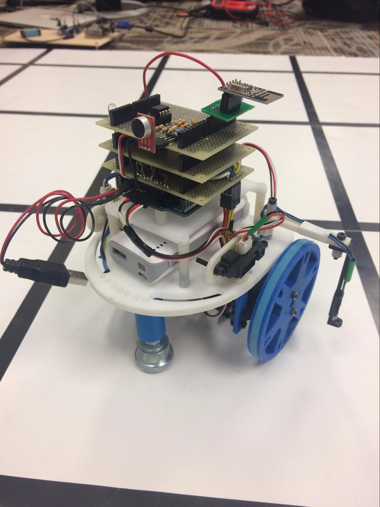
James Cassell
Aaheli Chattopadhyay
Claire Chen
Adam Chung
Yangyi Hao
Naomi Hess
Arvind Kannan
Curran Sinha
Table of Contents
1. Executive Summary 2
2. Functional Requirements 3
3. Table Of Performance Attributes 4
4. Value Engineering Method 5
5. Subsystem Breakdown 9
5.1 Microphone Circuit 9
5.2 Treasure Detection 12
5.3 Override Button Circuit 13
5.5 Base Station and FPGA 14
5.5.1 Robot - Base Station Communication 14
5.5.2 Data Encoding and Transmission 15
5.5.3 FPGA Display 16
5.6 Line Sensing and Robot Movement 17
5.7 Navigation 21
5.7.1 Baseline Design 21
5.7.2 Backtrack Optimizations 22
5.7.3 Detouring to Finish Earlier 23
5.7.4 Omitting Unnecessary Moves 26
5.7.5 Setting Priorities Accordingly 28
6. Possible Failure Modes 29
7. Conclusion 31
8. Appendix 32
8.1 Robot Arduino Code 32
8.2 Base Station Arduino Code 48
8.3 FPGA Code 51
1. Executive Summary
Over the course of a semester, our team successfully designed and built a maze-mapping robot capable of detecting the frequency and location of an infrared beacon in the maze. The information uncovered about the maze, including location of walls, explored territory, unexplorable territory, and location and frequency of treasure, is sent over radio to the base station and displayed on a VGA display. The robot was made of parts totaling less than $100.
Our robot performed very well at the end of semester, as it won the final competition. The biggest strength of our robot was the consistency of all the subsystems. It consistently was able to start upon hearing the 660Hz whistle, follow lines, execute turning, detect treasure presence and frequency, send information back to the base station, and display the information accurately. We attribute this consistency to thorough tests of each subsystem as well as the overall system. Another crucial part of the robot’s success during the competition was our path algorithm’s ability to minimize the number moves required to fully map the maze.
To test the robot, we first tested each subsystem multiple times and isolated any possible sources of error which we were able to correct. Once we were confident in the functionality of our subsystems, we focussed our efforts on integration. We tested the robot on many different maze configurations. Through our testing, we realized that the if the voltage of the 9V battery used to power the Arduino was lower than 9V, this would cause our robot to mis-detect walls and behave erratically. During the competition, we continuously monitored the level of the battery to mitigate this behavior.
The responsibilities of each group member throughout the course of the project are listed below:
James Cassell: Responsible for the design and implementation of the low-pass filter. Additionally, he designed and implemented all of the logic for the VGA display.
Aaheli Chattopadhyay: Responsible for the design and testing for the microphone circuit. Worked on testing the wall sensors out thoroughly, and helped with designing the path finding algorithm.
Claire Chen: Implemented line following with Naomi. Worked on treasure detection with Arvind. Helped team with testing. Laid out and soldered parts of circuitry to perforated boards and constructed robot.
Adam Chung: Responsible for designing and implementing optimizations to the path finding algorithm, testing the path algorithm with over 15 mazes, and implementing the amplifier for the microphone circuit.
Yangyi Hao: Responsible for designing, writing, and testing code for the path finding algorithm. Wrote a step-by-step simulation of path algorithm that was useful for debugging optimizations to the algorithm. Assisted James and Curran with first few iterations of design for VGA logic.
Naomi Hess: Implemented line following with Claire. Helped to debug microphone circuit. Helped team with testing. Laid out and soldered parts of circuitry to perforated boards and constructed robot. Constructed base station platform.
Arvind Kannan: Responsible for designing and implementing the treasure circuit with Claire and Curran and writing the accompanying code to calculate the frequency of the infrared beacon. Wrote the first draft of the path finding algorithm that proves the feasibility of a DFS search and the idea of backtracking.
Curran Sinha: Responsible for radio communication, base station, and design of the treasure circuit. Helped with debugging SPI communication with the FPGA and microphone circuit.
2. Functional Requirements
Figure 2.1: Functional Analysis diagram

Figure 2.1 illustrates the functional requirements of the maze-mapping robot. The 660 Hz whistle and the nature of the maze itself are taken in as inputs and processed in various subfunctions. The subfunctions lead to the outputs of the system, the movement of the robot, the VGA display, and the indicator LED that shows completion.
Subsystems:
Microphone
Override Button
Mapping Algorithm
Radio Transmission
Treasure Detection
SPI Transmission
VGA display
3. Table Of Performance Attributes
Table 3.1: Performance Attributes
Number | Demand (D) /Wish (W) | Requirement | Specification | Units |
1 | D | Power Arduinos with battery | 9 | V |
2 | D | Execute turns | ±90 and ±180 | degrees |
3 | D | Detect starting whistle | 650-670 | Hz |
4 | D | Stay within budget | 100 | USD |
5 | D | Sense nearby walls in front, right, left of robot | 1 | feet |
6 | W | Detect IR-emitting ‘treasure’ with specified wavelength | 940 | nm |
7 | D | Communicate to base station Arduino with Nordic RF24 radio | 2.4 | GHz |
8 | D | Navigate maze by following reference lines using at least one line sensor | ≥ 1 | Sensor |
9 | D | Draw mapped maze with FPGA onto VGA display by transmitting data to DAC VGA driver (which converts this information into 3 analog signals using a DAC) | 8 | bits |
10 | D | DAC outputs analog signals to VGA driver within the voltage limits of the VGA | 0-1 | V |
11
| D | Display will differentiate walls, open space, unexplored space, unexplorable space | 4 | colors |
12 | W | Move at a minimum speed | 12 | cm/s |
13 | D | Operate Servos at required voltage using rechargeable battery pack | 4-6 | V |
14 | W | Mount line sensor(s) at optimal height above maze surface for best line detection performance | 3 | mm |
Table 3.1 shows the crucial performance attributes that needed to be met for the robot to be successful. Each of these attributes was met by our robot during the competition.
4. Value Engineering Method
The value engineering method has been repeated for each of our robot’s subsystems.
Table 4.1: Robot Body
Component | Function | Value to Customer | Cost |
Arduino | Control of all subsystems | Absolutely necessary for all functions of robot | $22.00 |
4.5 inch 3D printed wheels | Movement | The movement and stability of the robot is one of the most important functions influencing a customer’s perception of the robot. The size of the wheels also plays a large factor in the speed | $2.25 |
Wide rubber bands | Wheel grip on maze surface | This is an important function because it prevents the robot from slipping while it is navigating maze. If the robot appears to slip on the maze, it will appear as if it is not line following correctly. | $0.06 |
3D printed IR sensor mounts | Mounting wall sensors | Mounting the IR sensors for wall is a valuable function because the sensors can be pointed directly at walls to ensure consistent wall detection. Also contributes to neat robot aesthetic. | $0.80 |
3D printed vertical mounts | Mounting line sensors, phototransistors for treasure detection | Important functions to ensure consistent and correct line and treasure detection. Also contributes to neat robot aesthetic. | $1.20 |
3D printed extenders | Extending mounts for treasure detection phototransistors so that they are closer to treasure | An important function that allows treasure detection phototransistors to be mounted within detection range of IR treasure to ensure accurate detection. | $0.75 |
Caster ball | Movement and stability | A crucial function for building a stable and aesthetically pleasing robot | $6.00 |
Caster ball mount | Mounting caster ball for movement and stability | Necessary for consistent circuit performance and sensor measurements. Also improves aesthetics of robot. | $1.25 |
Robot base platform | Platform for attaching sensor mounts, Arduino, circuitry, wheels | Necessary so the robot does not fall apart. | $3.00 |
Arduino platform | Mounting Arduino to robot | Necessary function for accurate measurements and adequate clearance | $0.50 |
Perf boards | Soldering circuitry | Provides a secure and stable platform for all the circuitry | $2.49 |
Screws | Structural stability of robot attachments | Used to stabilize all the parts of the robots, so that nothing falls off | $0.67 |
Plastic standoffs | Mounting attachments at correct heights | Used to mount attachment at specific heights, so that sensors can detect proper items | $0.91 |
Ways to reduce cost:
A strong method to reduce cost is to not use an Arduino Uno, a different microcontroller, like the PIC32 could be used instead which is much cheaper and has all the same functionalities. This could potentially reduce the cost of the microcontroller from $22.00 to about $5.00, quite a large saving!
Table 4.2: Power
Component | Function | Value to Customer | Cost per component | Total Cost |
5 volt battery pack | Powering the servos and microphone circuit | Necessary to power the wheels and for the robot to move | $6.95 | $6.95 |
2X9 volt battery | Powering the Arduino, wall sensors, line sensors, and treasure sensors | Necessary for robot to follow lines, detect walls, detect treasure, and complete an efficient maze traversal while transmitting correct information to the radio | $8 | $16 |
Table 4.3: Wall Detection
Component | Function | Cost per component | Total Cost |
3X IR Sensors | Detect Walls | $7 | $21 |
Ways to reduce cost:
Since the IR sensors already have low cost, we would have to find less expensive IR sensors.
Table 4.4: Line Following
Component | Function | Cost per component | Total Cost |
4X Grayscale sensors | Enables robot to follow black line | $3 | $12 |
Ways to reduce cost:
Due to the already low cost of the grayscale sensors, the only way to reduce cost would be to find cheaper grayscale sensors.
Table 4.5: Treasure Detection
Component | Function | Cost per component | Total Cost |
LTR301 phototransistors (3x) | Sensing IR emitters | $0.51 | $1.53 |
3x330 ohm resistor | Treasure circuit | $0.20 | $0.60 |
3x10 kohm resistor | Treasure circuit | $0.20 | $0.60 |
3x100 nF capacitor | Treasure circuit | $0.20 | $0.60 |
Ways to reduce cost:
To reduce cost we could find cheaper phototransistors. Or find a premade circuit which costs less the the total of the components that we use.
Table 4.6: Microphone and override button
Component | Function | Value to customer | Cost per component | Total Cost |
Microphone | Detects audio signal | The robot can only start moving once the microphone detects the 660 Hz signal and transmits the signal to the circuit to be amplified and filtered | $0.95 | $0.95 |
2X Op-Amp | Amplification and filtering of signal | One op-amp was used in the amplification of the signal while the other one was used to create the low pass filter,so that the 660 Hz could stand out against background noise | $0.43 | $0.86 |
Capacitors: 100nF,1nF,220F | Used in microphone circuit | Components needed for the correct functionality of the amplifier and low pass filter circuit | $0.30 | $0.90 |
Resistors: 10kΩ,1kΩ,2X9.1kΩ,470kΩ, 220kΩ, 270Ω | Used in microphone circuit | Components needed for the correct functionality of the amplifier and low pass filter circuit | $0.20 | $1.40 |
Push Button | Override button to trigger the robot to start | Activates an Analog pin on arduino, so that the car can start with a simple push of the button rather than the detection of the 660 Hz signal | $1.76 | $1.76 |
Resistor-330Ω | Pull-down resistor in override circuit | Acts as a pull-down resistor in override circuit | $0.30 | $0.30 |
Table 4.7: VGA Display
Component | Function | Cost |
Altera De0 Nano FPGA Board | Process map data and write to the display | $99.50 |
Jumper Cables | Connect data lines to the Arduino base station | $0.80 |
VGA adapter | Connect the FPGA to VGA cable | $3.50 |
VGA cable | Cable connecting FPGA to the monitor | $1.95 |
Monitor | Displays the output of the FPGA | $30.00 |
Wood | Consolidation of materials into one aesthetic place | $0.50 |
Screws | Connect FPGA and base station to the wood | $0.17 |
Ways to reduce cost:
To reduce cost of the VGA display system, we could easily get a cheaper FPGA to fun the code off of. Since VGA protocol operates at 25 MHz, there is little reason that we need an FGPA that runs at 50 MHz, especially since SPI is much slower at around 8 MHz. Another way to reduce the cost is to get a worse monitor, the monitor displays pretty basic information so there is no need for a high quality monitor.
Tables 4.1, 4.2, 4.3, 4.4, 4.5, 4.6, and 4.7 describe the function of the components of each subsystem of the robot and the associated cost.
5. Subsystem Breakdown
5.1 Microphone Circuit
The Microphone Circuit was implemented to detect a 660 Hz whistle that signals the start of the each round. It consists of an amplifier stage to amplify the output of the microphone and a Sallen-Key low pass filter to filter out high frequency noise. The Arduino then reads the amplified and filtered signal and performs an FFT to organize the signals into frequency bins.
The figure below details the schematic of the amplifier stage. Because of the low output of the electret microphone, it was necessary to implement an amplifier with enough gain to improve the signal-to-noise ratio (SNR).
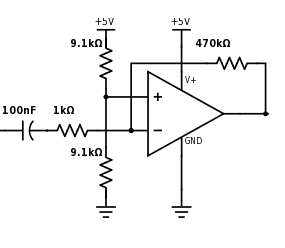
Figure 5.1.1 - Amplifier Stage
With the configuration detailed above, the gain of the amplifier stage was 470kΩ / 1kΩ = 470x. We determined that this was substantial enough to distinguish the signal from the noise clearly. The equation of the voltage at the output of the amplifier is as follows:
Next, it was necessarily for us to implement a Sallen-Key low pass filter to remove the high frequency component of the signal.
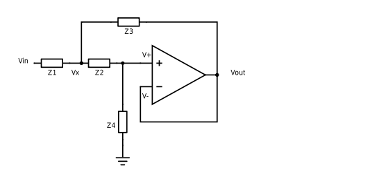
Figure 5.1.2 - General Topology of Sallen-Key Filter
In general, the circuit analysis for the Sallen-Key filter proceeds as follows:
(1)
Equation (1) comes from the fact that the operational amplifier is in negative feedback, meaning that the non-inverting and inverting inputs must be approximately equal.
(2)
Combining (1) and (2), we get:
Apply equation 1 and KCL at the non-inverting input (has voltage v+) of the operational amplifier to get:
Solve this to get (3):
Combine (2) and (3) to get (4):
Rearrange (4) to get (5), the transfer function for a general Sallen-Key filter: 
Now, by varying what Z1, Z2, Z3, and Z4 are (resistors, capacitors, and inductors), the characteristics of the filter can be very different. For example, the low-pass filter uses capacitors in all positions where the high-pass filter uses resistors, and uses resistors in all positions where the high-pass filter uses capacitors.
For a low-pass filter, we have:
Figure 5.1.3 depicts the schematic of the Sallen-Key Low Pass Filter which details the values chosen for each component. Given this configuration, the cutoff frequency of the filter was 1392.245 Hz. This was the closest we could get to 660 Hz while allowing enough room for error and minimizing attenuation of the signal.
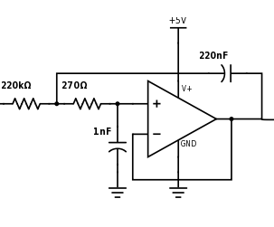
Figure 5.1.3 - Sallen-Key Low Pass Filter
Altogether, the amplifier stage is cascaded with the low pass filter to produce a filtered signal with improved SNR. We were satisfied with the performance of the microphone circuit in allowing the Arduino to make an accurate distinction between the presence and absence of the 660 Hz signal. The final microphone circuit with all major components is detailed in Figure 5.1.4 below.
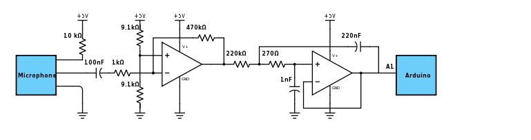
Figure 5.1.4 - Final Microphone Schematic
5.2 Treasure Detection
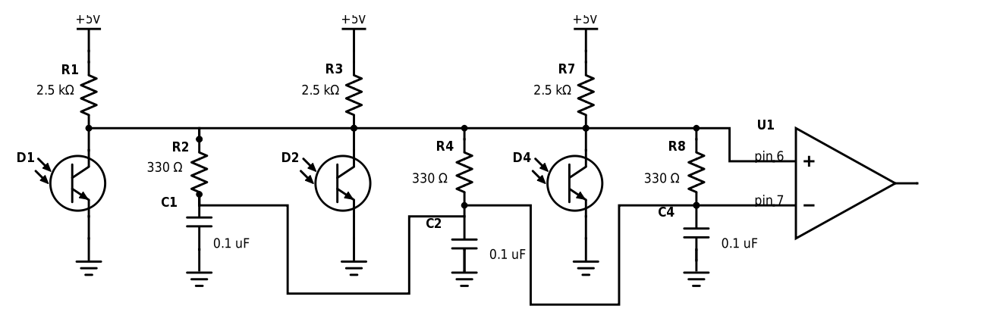Figure 5.2.1: Treasure Sensor Schematic
The circuit shown in Figure 5.2.1 is used for determining the presence of treasure and the frequency of the treasure. Note that there are 3 infrared sensors, and their outputs are tied together. This is because we needed to be able to detect treasure on the front, left, and right sides of the robot - only one of the three is expected to be active at a given time since there is only one treasure in each maze. The operational amplifier U1 is actually the internal comparator on the Arduino microcontroller. The positive input for the comparator is taken from digital pin 6 on the Arduino. The negative input for the comparator is taken from digital pin 7 on the Arduino. When the signal on the positive input exceeds the value on the negative input, the comparator outputs a high voltage, and otherwise outputs a low voltage. An interrupt is triggered when the comparator has a high voltage. The signal is connected to the positive input of the comparator and the low-passed signal is connected to the negative input of the comparator because regardless of the DC offset of the signal, we want both the inputs having the same DC offset. This way, the comparator can output a high signal whenever the positive input has a slightly higher voltage than the negative input, which happens once per cycle. The time between interrupts can be determined by reading the timer register in each time an interrupt is triggered and storing that value in a variable. R1 has a value of 10 kΩ, R2 has a value of 330Ω, and C1 has a value of 100 nF. These values were tuned such that the circuit worked properly.
5.3 Override Button Circuit
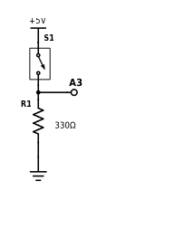
Figure 5.3.1: Circuit for override switch
The circuit for the override switch, seen in Figure 5.3.1, consists of a switch connected to the Arduino’s 5V power supply and a pull-down resistor of 330 ohms. The voltage across the resistor is sent to A3 on the Arduino. The code performs an analogRead and if the value is about 500 (corresponding to a voltage of 5V * 500/1024 = 2.44V), then that means the override switch is being pressed. So, it is clear that the override circuit is active high, since the voltage being measured is high if the button is pressed, and low otherwise.
5.4 Indicator LED Circuit for Completion
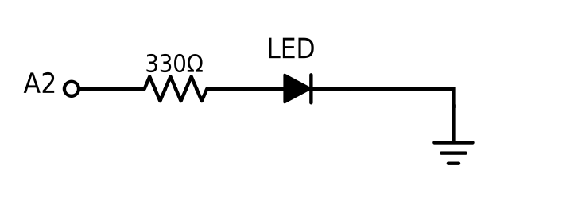
Figure 5.4.1: LED circuit that indicates completion of mapping
The circuit above consists of an LED connected to a 330Ω resistor going into A2 pin in the arduino. After the finished signal is activated, pin A2 becomes high and the LED lights up to indicate that the robot has finished mapping the maze.
5.5 Base Station and FPGA
5.5.1 Robot - Base Station Communication
Several considerations were made in regards to the design of the information being transmitted from the maze-mapping Arduino to the base station Arduino. As stated earlier, one possibility was to send the entire maze in the form of a 2D char array. As the maze is uncovered and new information is detected, the maze-mapping Arduino would make changes to the 2D char array and retransmit it to the base station. On the other hand, an alternative was to send only new information about each coordinate of the maze. The information would be in the form of a 1D char array. After discussing with team members working on encoding the pixels on the display and those working on the path algorithm, we arrived at a consensus to only send new information to the base station. Our next step was to determine how the following information should be encoded as a char array:
- Presence or absence of wall (up, down, left, right)
- Presence or absence of treasure (9kHz, 11kHz, 13kHz, 15kHz, 17kHz)
- Whether or not the robot is finished exploring maze
When encoding the presence of a wall, we are stating the absolute direction of the wall. For instance, the presence of a wall on the upper edge of the coordinate with respect to the display will be encoded as wall up, regardless of the orientation of the robot. This way, the information will be much easier to decode and display onto the monitor. Additionally, it was important to be able to encode whether or not a robot has exhausted all explorable paths. The ‘finished’ signal will help the FPGA determine which regions were ultimately unexplorable and mark them as such on the display.
We chose to use a 2-byte char array to store all of our encoded information. The first byte includes all necessary details about the maze mentioned earlier, such as presence of wall, treasure and whether the robot is finished. Bit 15 is set if the robot is finished. Bits 12-14 encode the presence or absence of a treasure in this way:
- 000 - No treasure
- 001 - 7kHz treasure
- 010 - 9kHz treasure
- 101 - 15kHz treasure
- 011 - 11kHz treasure
- 100 - 13kHz treasure
- 110 - 17kHz treasure
- 111 - Don’t Care
Bits 8-11 encode a wall on each direction and are set if a wall in that direction exists.The second byte stores the absolute x-coordinate and y-coordinate position of the robot with respects to the axes of the display. The four most significant bits 4-7 encode the x-coordinate position, and the four least significant bits 0-3 encode the y-coordinate. The final data encoding design is illustrated in Figure 5.5.1a.
Bit | 15 | 14 | 13 | 12 | 11 | 10 | 9 | 8 |
Info | Finished | Treasure | Wall Right | Wall Left | Wall Down | Wall Up |
Bit | 7 | 6 | 5 | 4 | 3 | 2 | 1 | 0 |
Info | X-coordinate Position | Y-coordinate Position |
Figure 5.5.1a - Date Encoding Design
5.5.2 Data Encoding and Transmission
To transmit data between our Arduino base station and the FPGA, we decided to use SPI communication. This allowed us to save on the amount of pins we used on the Arduino and made for a neater base station by not having many wires in parallel, as seen in Figure 5.5.2a.
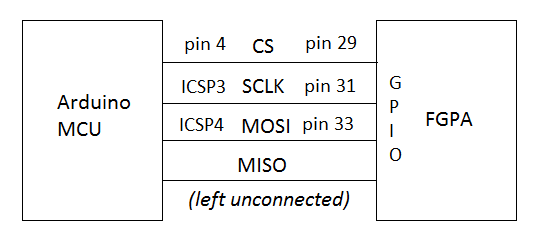
Figure 5.5.2a: Connections between Arduino microcontroller and Altera DE0 Nano FPGA for SPI
When transmitting data to the FPGA, we decided to only send new information. This way there was were are able to minimize redundancy and are able to have shorter radio transmissions which take up a large amount of time. We used the same data encoding when transmitting over SPI as we did over radio as described in the previous section and Figure 5.5.1a.
5.5.3 FPGA Display
On the FPGA, in order to display to the monitor, we used three main modules: VGAdriver.v, blockArray.v, VGAlogic.v.
VGAdriver.v was a module we were supplied with by course staff which handled using VGA to display to the screen based on coordinate and color input. Blockarray.v was used to store our information about the maze. There we had a 1024 element array with 5-bit values which was used to keep track of our state of the maze. Each block corresponded to a 32x32 pixel block on the display. To map a set of (X,Y) coordinates into the array, the top 5 bits of each would be taken, and then concatenated to get the value in the array at the block the coordinate is in.
The 5 bits in stored in the array were used to keep track of walls and the state of visitation. The bottom four bits were used as signals for if that block had a wall on the north, south, east, or west face of it. While the top bit was used to keep track if it had been visited or not. With the blockarray, we were able to read and write at the same time, which allowed us to update the map as we were gathering new information from the robot.
VGAlogic.v was the heart of the system, it was where we chose what colors to display and where we received communication over SPI from the base station. To receive data over SPI, we use a counter to know what bit we are on when the slave clock goes high and chip select is low, and as such set the correct bit of our receiving buffer. When this buffer became full, we would decode the received data. To do this we had the transform the encoded X and Y coordinates to those which corresponded to the correct placement of the map location on our display. After that, we used those coordinates to map into the blockArray and write the wall data. We also set the top bit high in the array element since now we knew that the position was visited. Then we decoded the treasure bits, if the bits were anything but 0, we assumed that this was the signal we are meant to receive. In this case, we update registers that we have which keep track of where in the maze the treasure is, while updating another which lets us know which treasure was found in the map. Lastly, we always check the top most bit of the receiving buffer to see if we are finished. If so, we write a register high to indicate that we are finished.
To draw all the items on the display, we use many if/else if/else statements to determine the color that should be outputted, based on the location of the pixel, as well as the value in the block array, treasure number and location, and if we are finished or not.
To draw the map, we set aside 20 blocks in a 4x5 rectangle to show the maze as we update it. We use parameters to keep track of where on the display the outside of the maze is, and draw the border walls there. Then, when a pixel inside of the maze needs to be drawn, we first read from the blockArray using the position as the index. If we find that there is a wall on a certain edge, then if the pixel is in the correct position in that block, it is displayed as the wall color. Otherwise if the treasure is in that block, and the pixel is in the center of the block, it will be displayed as the treasure color. Otherwise, if the block has been visited, we display green to indicate that it has, otherwise if we are unfinished we show yellow to indicate that it hasn’t been visited yet. Or if we are finished we display magenta to show that the block is unavailable.
To draw the tally marks to indicate what treasure we had, we drew various numbers of rectangles based on the value of the treasure. The register storing the treasure was 3 bits, so we used each bit to decide how many tallies to draw. We used the value of what each bit represent to draw that many number of tallies if the bit value in the register was high. For example, if the LSB of the register was high, we drew one tally mark, and if the MSB of the register was high, we drew four tally marks. The exact tallies that each drew were designed so that they were all equally spaced out starting from a common location which was stored in a parameter.
To create the nifty animation, we used a timer which would change the background and circle colors every 2^9th clock tick. The background and circle also would change colors based on if the maze was finished mapping or not. To get the circle to create the aesthetic pattern which was observed, when doing the comparison for if the pixel would be considered “in the circle” we allowed integer overflow to occur. This allowed us to get the psychedelic pattern which was displayed, making a commentary on how integer overflow is typically seen in a negative capacity, but can actually be quite beautiful.
Lastly to draw the finished triangle, we checked if the pixel was in a given region which represented the triangle, if so, we would then check if we were finished mapping or not. If we were done then we displayed green, otherwise red.
5.6 Line Sensing and Robot Movement
Our robot used the continuous rotation Parallax servos provided as the default option with 4.5 inch 3D printed plastic wheels. Our line following method employed four grayscale sensors, two for simple line following and two for intersection detection. The servos were powered by a five volt battery pack, while the line sensors received power from the 5 volt pin on the Arduino. The circuit diagrams for the line and wall sensors can be seen below in Figure 5.6.1.
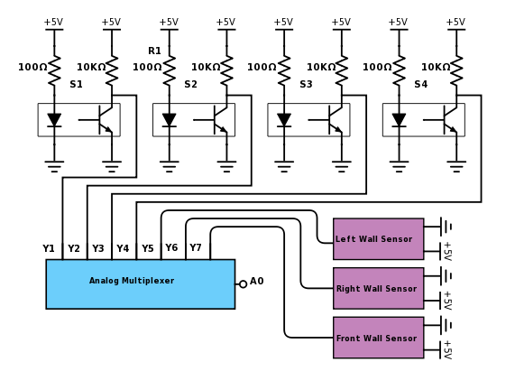
Figure 5.6.1 - Wall and line sensor circuit diagram
The line following is achieved by adjusting the speeds of the servos proportionally to the amount that the robot has moved off of the tape line. It functions functions as PID control using only the proportional term, though in discrete levels. We decided not to use control based on the integral or derivative of the error because it does not provide a noticeable improvement in performance since the robot only did line following for such short periods of time (from one intersection to the next). The intersection-sensing line sensors are placed so that the axis of rotation of the servos was over the center of the tape line of the intersection when the intersection was detected. This was done in order to improve turning performance. See Figure 5.6.2; the forward direction again is the top of this diagram, and the front edge of the robot is the straight edge of the platform.
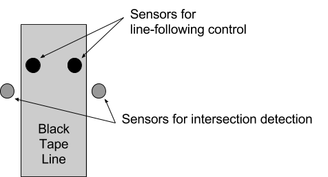
Figure 5.6.2: Configuration of line sensors relative to the tape line
The line following code calculates an error term by subtracting the value of the right central sensor from that of the left central sensor. This means that even if the robot has turned off the line enough that both sensors are completely off of it, as long as one sensor is still close to the edge of the line the robot can calculate how far it is in error and in which direction (error will be negative if the robot is erring to the right and positive if it is erring to the left). The line following is performed inside of a while loop that runs while the robot is moving from one intersection to another (the while loop starts after a turn is completed and runs until the next intersection is reached). The line following is achieved as follows (see Code Sample 5.6.1 for relevant line following code):
The value of the error term is compared to a defined value ERROR_RANGE. If the error value is between within a certain range (negative ERROR_RANGE and positive ERROR_RANGE), the servos are set to drive at the same speed (drive straight). If the value of the error term is outside that range to the left (error is greater than positive ERROR_RANGE), the robot corrects to the right by an amount proportional to how far outside the acceptable range the front of the robot is (moves with its left servo faster than its normal forward speed and the right servo slower than its normal forward speed). If the value of the error term is outside the acceptable range to the right (error is less than negative ERROR_RANGE), the robot corrects to the left by the same method. This correction loop runs continuously until the robot reaches an intersection (which is determined by both of the sensors on either side of the tape line, over the floor, reading above a certain value, which indicates that they are over the perpendicular black line of an intersection), when the servos are stopped and the move procedure ends. The navigation algorithm then calculates the next move based on the wall geometry at the intersection and calls the move procedure again with the desired direction as an argument. In other words, the robot navigates by correcting its path according to a proportionate control loop scheme.
Code Sample 5.6.1
- // After turn is complete, drive forward to the next intersection, making corrections as necessary
- // while-loop is all of line following
- while(right_turn_val<700 || left_turn_val<700){
- // Don't start searching for an intersection until the intersection sensors are clear of the tape line
- if (counter>0){
- right_turn_val = 0; //set so that while loop continues
- left_turn_val = 0; //set so that while loop continues
- counter = counter - 1;
- }
- else {
- right_turn_val = muxRead(right_turn); //signal from center right sensor
- left_turn_val = muxRead(left_turn); //signal from center left sensor
-
- }
-
- // Read analog values from two center sensors
- right_pid_val = muxRead(right_pid); // signal from center right sensor
- left_pid_val = muxRead(left_pid); // signal from center left sensor
- ////Serial.println(right_pid_val);
- ////Serial.println(left_pid_val);
- ////Serial.println();
- error = left_pid_val - right_pid_val; // Positive position to right of line
- if (abs(error) <= ERROR_RANGE){
- left_servo.write(SERVO_L_FORWARD_MAX);
- right_servo.write(SERVO_R_FORWARD_MAX);
- }
- // Too right
- else if (error > ERROR_RANGE) {
- // Adjust left
- error_magnitude = abs(error)/(float)ERROR_RANGE;
- left_servo.write(SERVO_L_FORWARD_MAX - error_magnitude*SERVO_L_INCR_FORWARD);
- right_servo.write(SERVO_R_FORWARD_MAX + error_magnitude*SERVO_R_INCR_FORWARD);
- }
- // Too left
- else if (error < -ERROR_RANGE) {
- // Adjust right
- error_magnitude = abs(error)/(float)ERROR_RANGE;
- left_servo.write(SERVO_L_FORWARD_MAX + error_magnitude*SERVO_L_INCR_FORWARD);
- right_servo.write(SERVO_R_FORWARD_MAX - error_magnitude*SERVO_R_INCR_FORWARD);
- }
- delay(10);
- }
- left_servo.write(SERVO_BRAKE);
- right_servo.write(SERVO_BRAKE);
|
Turning is the first movement performed by the move procedure. The move procedure is called by the navigation algorithm when the robot is at an intersection. The navigation algorithm uses the information about the walls near the robot to determine whether the robot should go left, straight, right, or turn 180 degrees, then calls the move procedure to make that turn and move to the next intersection. The move procedure executes a turn in the following manner (see Code Sample 5.6.2 for turning code): if the robot must make a turn (is not going straight), the servos are set to rotate the robot in the required direction for a fixed duration that corresponds to the turn; a 90 degree turn rotates for a shorter delay than a 180 degree turn. The robot then continues to turn while reading from the center line sensors; when both of the center line sensors read a high enough value (indicating that they are over a tape line), the servos are halted for a moment while the angular momentum from the turn is dissipated in the robot’s settling motion. Then the servos are set to drive forward blindly for a short time so that the intersection sensing sensors (those on the outside of the tape line on either side) are clear of the intersection, and the values of the intersection variables are reset. The robot then drives forward to the next intersection by the method described above Code Sample 5.6.1. If the robot does not need to make a turn when the move procedure is called (was instructed to drive straight through the intersection), the servos are simply set to drive forward blindly for a short period so that the line sensors can move past the intersection, and then the robot drives to the next intersection by the same method as if it had made a turn.
Code Sample 5.6.2
- //turn if requested
- if (direction != 1){
- // Start turning until off the current line
- left_servo.write(servo_turn_value[direction]);
- right_servo.write(servo_turn_value[direction]);
- delay(servo_turn_delays[direction]);
-
- // Read values from center line sensors
- right_pid_val = muxRead(right_pid);
- left_pid_val = muxRead(left_pid);
-
- // While center sensors are not over another line, continue turning
- while((right_pid_val<900) || (left_pid_val<900)){
- right_pid_val = muxRead(right_pid);
- left_pid_val = muxRead(left_pid);
- }
- }
- // Reset intersection variables
- right_turn_val = 0;
- left_turn_val = 0;
|
5.7 Navigation
The backbone of our navigation algorithm takes on a DFS approach. The first of the following subsections “Baseline Design” introduces our initial approach without any optimizations, and the rest of the subsections in this section discuss our major optimizations made to our baseline design.
5.7.1 Baseline Design
Our mapping algorithm is essentially a highly optimized DFS implemented on a stack. At each grid, the robot detects the wall information of the current block using the wall sensors, sense all the neighboring blocks that are visitable but unvisited, and pick one according to the priority orders and push all the rest to the stack. The robot repeats on the above pattern until all the neighboring blocks are either blocked by walls, already visited - what we call entering into a dead end. The robot would then look at the top of the stack. Nothing left in the stack is an indicator of that the robot has finished mapping the entire maze, and if the stack is not empty, the robot will backtrack to that block, since that is the most recent last visitable “neighbor”. From a software’s perspective, the action of backtracking wouldn’t be necessary - a DFS in software would simply move the iterator to that last most recent visitable block. However, in our robot’s implementation, the need of backtracking introduces a major challenge. An initial implementation of backtracking was that we created a new 20 element-long array where each element corresponds to a block in a 5 by 4 maze. The information stored at each index of this array is the ID of another block from where the block pointed by the index was first visited - what we define as the backpointer. When backtracking, the robot will flow each block’s backpointer and move to the block pointed by the backpointer, until it reaches the least common ancestor of the block that introduces a dead end and the most recent visitable block. However, such an implementation introduces many unnecessary moves, so we made an important optimization on our backtracking algorithm that will be introduced in the next subsection.
5.7.2 Backtrack Optimizations
The first thing we did to implement the optimization is to change from assuming no walls to assuming there are walls at the beginning of the stage, the robot would then take out walls as it navigates through the maze. Once the robot enters a dead-end, it simply look at the information of the maze and the walls taken out so far, and go to the most recent visitable block with the shortest path, done by a BFS pattern that counts up from the destination. Without this important change of assumption, the robot wasn’t able to do so, since we assumed there were no walls at the beginning, so even if the robot saw that there was no walls between two blocks, it cannot know it for sure, since it might not have visited the blocks around that wall before so it could not have detected it if there was a wall, and therefore the robot could only rely on the idea of backpointers. Once we changed to assuming there are walls at the beginning, when the robot sees a clear path with no wall, it will no it for sure, since it must have verified and taken out the wall before. Figure 5.7.2.1 shows an example of traversing maze without backtracking optimizations, and Figure 5.7.2.2 shows the same maze as traversed with backtracking optimizations.
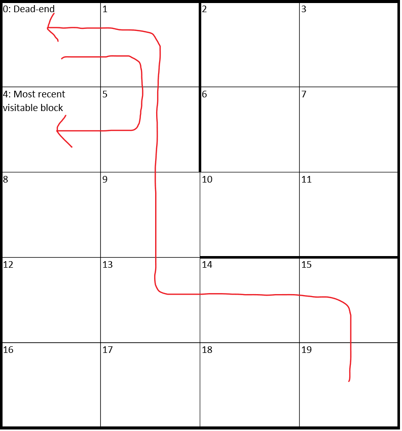
Figure 5.7.2.1 - Path with DFS but without Backtracking Optimizations
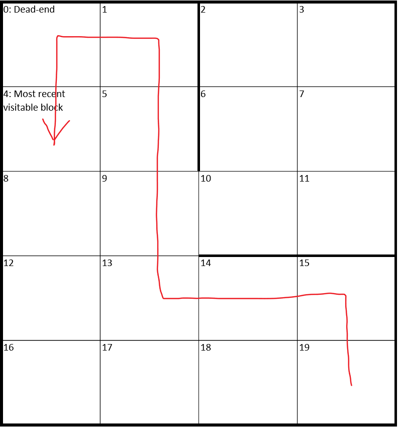
Figure 5.7.2.2 - Path with DFS and Backtracking Optimizations
5.7.3 Detouring to Finish Earlier
Despite having an optimized backtracking algorithm working in conjunction with our DFS implementation, we discovered after extensive testing that there are certain mazes that can exploit weaknesses in our navigation algorithm. For easy mazes, the robot follows a very simple path to visit each block in the stack. However, we were able to make a distinction between difficult and easy mazes because difficult mazes exploit blocks at the bottom of the stack, forcing the robot to backtrack from wherever it is currently located to these blocks. In some cases, this issue was not a problem for us, but for other test mazes there was as many as 10 additional steps needed. Figure 5.7.3.1 illustrates a maze that exploits blocks in the bottom of the stack, causing the robot to finish in 33 steps.
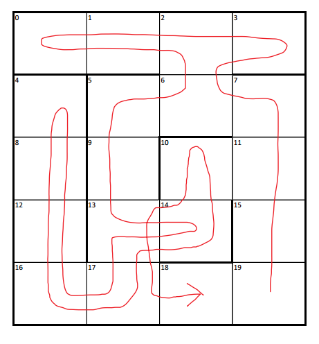
Figure 5.7.3.1 - Path without Detouring
In this maze, the blocks 10 and 18 are pushed to the stack early when the robot initially moves up. However, the robot has an opportunity to visit block 10 when it is at block 14, but fails to do so because the next node in the stack is block 17 and the robot backtracks to get there. After visiting block 17, the robot pursues block 16 and continues along that path although it could have visited block 18. The robot suffers for making this decision because after reaching block 4, the robot must backtrack to visit node 10 first, and then block 18 to finish exploring.
In order to optimize the navigation algorithm to account for these scenario, we kept track of how many times we encountered unvisited blocks. This way, if an opportunity arises to visit a block at the bottom of the stack, the robot detours to it and resumes pursuing nodes popped from the top of the stack. By making this change, the number of steps required to explore the same maze is reduced from 33 to 26. Figure 5.7.3.2 illustrates the path the robot takes when it chooses to visit unvisited blocks when it is seen for the second time.
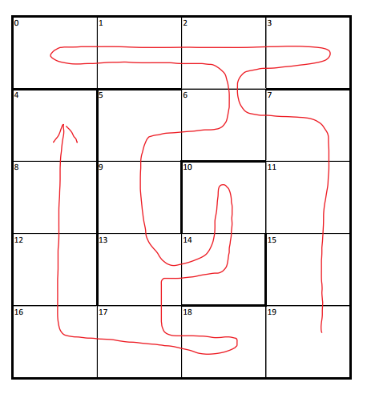
Figure 5.7.3.2 - Path with Detouring
Evidently, the path algorithm saves the robot from backtracking unnecessarily to pursue final nodes at the bottom of the stack. In order to make sure that this optimization does not hurt the robot’s exploration performance on easy mazes, we ran the updated algorithm across our older test cases. Below we illustrate a earlier test maze with the updated algorithm to show that the number of steps does not increase, and in actuality performs better in some cases by getting rid of the block that would be at the bottom of the stack early, hence eliminating the need to backtrack to it at the end. In Figure 5.7.3.3, the robot detours to block 18 when it sees it for the second time while positioned at block 14.
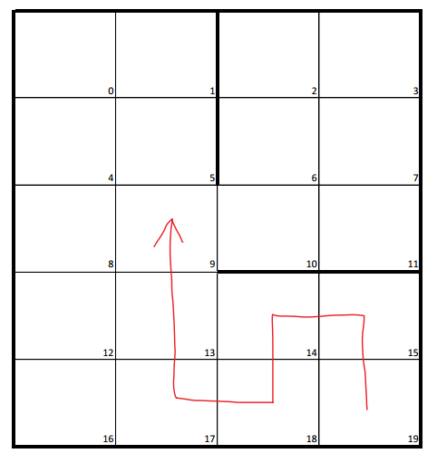
Figure 5.7.3.3 - Path with Detouring on an Earlier Maze
5.7.4 Omitting Unnecessary Moves
With all the previous optimizations, we also realized that to successfully map all the walls of the maze, we don’t necessarily have to visit all the blocks, since that going into certain blocks don’t bring any new information about the walls. Omitting such blocks will always stop the robot one block before the finishing block (except if the treasure happens to be on the last block), and can even save a large amount of moves if the blocks that are omittable happen to be at other critical positions. However, we cannot perform such optimizations before we find the treasure, since even if the blocks that are omittable do not bring new information it might hold a treasure.
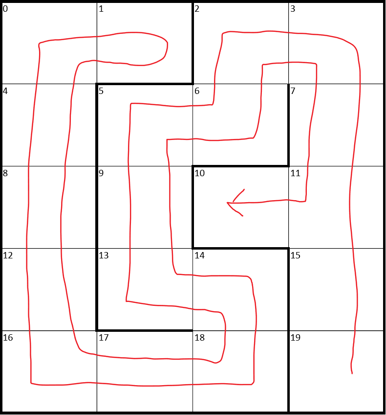
Figure 5.7.4.1 - Path that does not omit a block
The example depicted in Figure 5.7.4.1 illustrates how the robot has to go back to block 10 after it nearly finishes mapping when it visits block 1. All the steps of backtracking to block 10 is unnecessary.
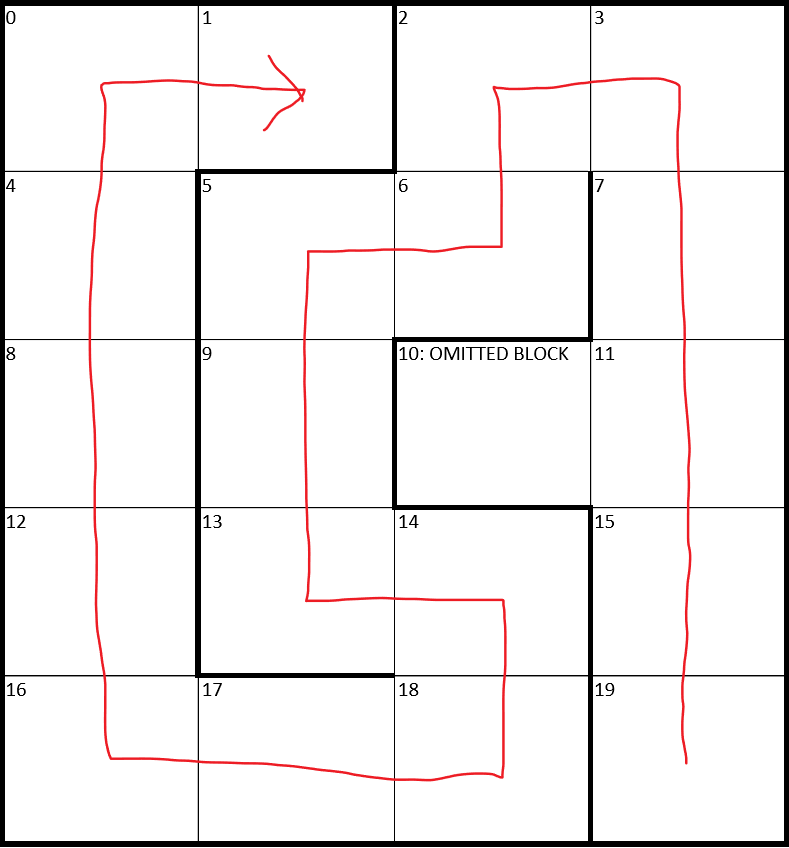
Figure 5.7.4.2 - Path that does omit a block
In the same example but with the mechanism that omits unnecessary blocks, the robot does not visit block 10. The robot can do this because it has already seen block 10 from its all four directions, so it already knows all the walls around block 10, so if the robot has found the treasure elsewhere (it is guaranteed to find exactly one treasure in each maze), then it does not have to visit block 10 as demonstrated in Figure 5.7.4.2.
5.7.5 Setting Priorities Accordingly
Often, the robot has four choices of which direction to go in. In that case, there is a priority defined by which direction is chosen to be explored first. For the depth-first search algorithm that was used for path-finding, this priority comes from which of the adjacent cells is pushed to the stack last (first in, last out). At an intersection, the cell that is pushed to the stack first has a lower priority than cell(s) pushed later.
Before the robot has found the treasure, priority for directions to move to is as follows: right, up, left, and down, with moving right having the highest priority. Through extensive testing, we determined that this set of priorities worked best overall with the optimizations we implemented. It also makes sense intuitively: the robot starts on the bottom right corner, so we visit the rightmost blocks before we explore the ones above, then left, and finally return to the bottom to finish exploring. After the robot has found the treasure, the robot’s North direction is prioritized. We do this because testing revealed that traveling straight was significantly faster than turning, so we felt that by prioritizing the robot to go straight, we could limit the number of turns and therefore decrease the overall time spent by the robot mapping the maze. The rationale for only implementing such an optimization after the robot has found the treasure is that more omittable blocks will emerge once the robot found the treasure, so by prioritizing going straight, the robot could have automatically omitted blocks on the sides that eventually turn out to be omittable.
6. Possible Failure Modes
Table 6.1: Failure Modes for maze-mapping robot
FM# | Item | Failure Mode | Failure Effects (a. Local, b. System, c. Mission) | Possible Causes | Corrective Action (a. Design, b. Mfg process, c. Operation) | Failure effect Severity | Occurrence Likelihood | Risk Priority | Criticality |
F.1 | Microphone circuit subsystem | Failure to trigger at correct frequency | b. Robot won’t start immediately, will need to press override switch | Op-amp burnt out, resistor not soldered correctly, input signal too low, checking wrong bin for FFT | a. Use more gain b. Better soldering | 5 | 4 | 20 | Very Low |
F.2 |
| Triggering for incorrect frequency | b. Reset robot | Resistor or capacitor burning out or soldered improperly | a. More consecutive triggers, higher trigger value c. Not powering robot until needed | 5 | 5 | 25 | Low |
F.3 | Override circuit subsystem | Returning high value when not pressed | b. Robot false starts, needs to be reset | Button shorted, trigger value wrong | a. Better trigger value b. Use different button | 10 | 1 | 10 | Very Low |
F.4 |
| Not returning a high value when pressed | b. Robot fails to start c. Failure of mission if microphone circuit doesn’t work | Button broken, wrong resistor value, trigger value wrong | a. Better trigger value and resistor b. Check connections | 10 | 1 | 10 | Very Low |
F.5 | Batteries | Battery undervoltage | b. Sensors won’t be on, radio won’t transmit information, c. Mission failure | Defective battery, too many runs with the same battery | c. Replace battery, check voltage before starting | 10 | 6 | 60 | Med |
F.6 | Treasure circuit subsystem | Not recognizing there is treasure at an intersection | b. No treasure detected | Faulty IR sensor connection, interrupt not triggered, circuit failure | b. Check connections, make sure operational amplifier is not burnt out | 5 | 5 | 25 | Low |
F.7 |
| Thinking there is treasure at an intersection when there isn’t | b. False treasure detected | Triggered from ambient IR light, circuit failure | a. Add covering around sensor b. Check connections, make sure operational amplifier is not burnt out
| 5 | 3 | 15 | Very Low |
F.8 |
| Recognizing there’s treasure but getting the wrong frequency | b. Wrong treasure detected | Timing between interrupts matched incorrectly, circuit not triggering correctly | a. Fixing ISR in code to calculate the frequency correctly | 5 | 2 | 10 | Very Low |
F.9 | Radio communication subsystem | Sending incorrect information to basestation | b. No or incorrect information displayed on FPGA | Loose connection, wrong bit-rate | a. Change bit rate to match on both sides | 6 | 2 | 12 | Very Low |
F.10 |
| Not sending any information to basestation | b. Nothing displayed on FPGA | Loose connection, SPI setup problem | b. Stabilize radio breakout board c. Making sure radio is getting power | 6 | 4 | 24 | Low |
F.11 |
| Not receiving any information at basestation |
| Loose connection, SPI setup problem | b. Stabilize radio breakout board c. Making sure radio is getting power | 6 | 4 | 24 | Low |
F.12 |
| Receiving incorrect information at basestation | a. VGA display will show inaccurate depiction of maze | Interference from other groups’ radio communication due to not using our assigned channel number | a. Use assigned channel number | 6 | 2 | 12 | Very Low |
F.13 | Servo subsystem | Servo motors not functioning | b. Robot won’t be able to move c. The robot not being able to move means that the mission of mapping and displaying the maze will not succeed. | Low battery on battery pack | c. Make sure battery pack is fully charged before use. | 10 | 3 | 30 | Low |
F.14 | Wall sensor subsystem | Doesn’t “see” wall in front of it | b. Robot could run over wall. c. Mission fails because maze info collected will be incorrect | Low battery on 9V battery, wall sensors not properly wired up to Arduino | b. Make sure wires are neat and that they fit snugly into the headers on protoboard shield, make sure enclosure for sensor is secure so wall sensor is properly aligned c. Make sure 9V has sufficient charge | 10 | 5 | 50 | Med |
F.15 |
| “Sees” a wall in front when there isn’t one | b. Robot might not explore an explorable part of maze. c. Mission fails becuase maze info collected will be incorrect | Low battery on 9V battery, wall sensors not properly wired up to Arduino | b. Organize wires neatly and ensure they fit snugly into headers on protoboard shield, make sure enclosure for sensor is secure so wall sensor is properly aligned c. Make sure 9V has sufficient charge | 8 | 6 | 48 | Med |
F.16 | Line following subsystem | Not following lines | a. Robot can’t move to next intersection b. Robot will not be able to move any further intersections c. Mission is a failure because information about the maze cannot be determined and displayed on monitor. | Variation in ambient light Light sensors not getting powered Light sensors not working Light sensors not being connected to correct pins on the Arduino | b. Organize wires neatly and ensure they fit snugly into headers on protoboard shield, add enclosure for light sensors | 10 | 2 | 20 | Very Low |
Table 6.1 shows every conceivable way that the robot could fail to perform successfully. Throughout the project, we strived to address all of the design choices that could mitigate these failures, and on competition day, we made sure our operation of the robot adhered to the guidelines mentioned in the failure modes table.
7. Conclusion
In summation, the robot we were able to create this semester performed quite well in all aspects of the specifications of the project, including: being able to start off a 660 Hz pitch with an override button as a backup, finding the location and frequency of an infrared beacon, traversing just enough of the maze to know the placement of all walls, sending all information about the maze to the base-station, and clearly displaying the information about the maze to a VGA display.
Our goals at the beginning of this competition were to work effectively as a team and to medal in the competition at the end of the semester. Both of these goals were achieved. The former was accomplished because we all made a great effort to communicate as much as possible and devote as much time to the project as possible. The latter was accomplished because of our attention to detail on all subsystems of the robot.
One limitation of our design when the robot was in its earlier stages was that the microphone circuit and accompanying Fast Fourier Transform code was not reliable enough. After a lot of testing, it was determined that the reason was that the protoboard we had the microphone circuit on was too far separated from the Arduino (it was the top-most protoboard shields, the shield farthest from the Arduino), causing attenuation of the microphone signal. We re-arranged the order of the shields and placed the microphone circuit shield closest to the Arduino, and the 660 Hz was reliably detected without any false starts. A limitation of the final design was that we used 9V batteries to power the Arduino instead of a 5V battery pack. We found that the Arduino required enough power that the 9V batteries were depleted very quickly. We had to use a new 9V battery for each round of the competition because of this design limitation.
We covered the subsystems thoroughly by running each one through the process of designing, prototyping, testing, iterating, and manufacturing. The emphasis we put on testing really paid off during the competition because the robot was remarkably reliable across the four rounds of competition. There was a lot of soldering and wiring to be done for this project, and therefore many areas for where one wire could get disconnected. It’s a testament to our thorough testing process that all wiring and circuit problems were caught and completely fixed prior to the competition.
8. Appendix
8.1 Robot Arduino Code
- #include <SPI.h>
- #include <Servo.h>
- #include "nRF24L01.h"
- #include "RF24.h"
-
- // Servo speed definitions
- #define SERVO_BRAKE 90
- #define SERVO_L_FORWARD_MAX 100.0
- #define SERVO_R_FORWARD_MAX 80.0
- #define SERVO_L_INCR_FORWARD 2.0
- #define SERVO_R_INCR_FORWARD -2.0
-
- #define ROW_NUM 5
- #define COL_NUM 4
-
- // Servo objects
- Servo left_servo;
- Servo right_servo;
-
- // Control variables for line following
- float error = 0;
- float error_magnitude = 0;
- int counter = 0;
- #define ERROR_RANGE 100
-
- // Line sensor values
- int right_pid_val = 0;
- int left_pid_val = 0;
- int right_turn_val = 0;
- int left_turn_val = 0;
-
- // Servo turn values
- float servo_turn_value[] = {SERVO_R_FORWARD_MAX,0,SERVO_L_FORWARD_MAX, SERVO_L_FORWARD_MAX};
- int servo_turn_delays[] = {300,0,300,900};
-
- // FFT parameters
- #define LOG_OUT 1 // use the log output function
- #define FFT_N 128 // set to 256 point fft
- #define AMP_THRESHOLD 80
- #define FFT_TRIGGER 3
- #include <FFT.h>
-
- int threshold = AMP_THRESHOLD;
- int fft_counter = 0; //for false positives
-
-
- // Variable that dictates which way robot turns at intersection
- //0 left, 1 straight, 2 right, 3 180
- int direction = 1;
-
- //Wall sensing
- const int selectPins[3] = {8, 2, 4}; // Mux select signals S0~2, S1~3, S2~4
- const int zInput = A0; // Connect common (Z) to A4 (analog input)
- #define RIGHT_WALL_SENSOR_THRESHOLD 400
- #define LEFT_WALL_SENSOR_THRESHOLD 220
- #define FRONT_WALL_SENSOR_THRESHOLD 100
-
- // Inputs on analog mux
- #define rightWall 6
- #define leftWall 5
- #define frontWall 7
- #define right_pid 3
- #define left_pid 2
- #define right_turn 4
- #define left_turn 1
-
- #define ledIndicator A5
-
- // Wall sensor values
- int rightWallVal = 0;
- int leftWallVal = 0;
- int frontWallVal = 0;
- int wallsRadio = 0;
-
- #define WALL_FRONT_2 5 //1
- #define WALL_LEFT_2 12 //2
- #define WALL_RIGHT_2 6 //4
-
- // Radio
- #define WALL_NORTH_2 1
- #define WALL_SOUTH_2 2
- #define WALL_WEST_2 4
- #define WALL_EAST_2 8
- #define NO_TREASURE 0
- #define KHZ_7 1
- #define KHZ_9 2
- #define KHZ_11 3
- #define KHZ_13 4
- #define KHZ_15 5
- #define KHZ_17 6
- #define FINISHED 128
-
- //Radio values
- uint8_t treasure = 0;
- bool finished = 0;
- char info[2] ={0};
- uint8_t xPos;
- uint8_t yPos;
-
- // Radio Setup
- // Set up nRF24L01 radio on SPI bus plus pins 9 & 10
- RF24 radio(9,10);
-
- // Radio pipe addresses for the 2 nodes to communicate.
- const uint64_t pipes[2] = { 0x000000000CLL, 0x000000000DLL };
-
- // Role management
-
- // The various roles supported by this sketch
- typedef enum { role_ping_out = 1, role_pong_back } role_e;
-
- // The debug-friendly names of those roles
- const char* role_friendly_name[] = { "invalid", "Ping out", "Pong back"};
-
- // The role of the current running sketch
- role_e role = role_ping_out;
-
- // Treasure detection pins
- int treasure_detection_pin = 6; // Positive input of internal comparator
- int avg_val_pin = 7; // Negative input of internal comparator
- //unsigned int period = 0;
- unsigned int treasure_freq = 0;
- int on = 0;
- bool treas = false; // indicates whether the current intersection has treasure in the vicinity
-
- volatile int treasure_index = 0;
- volatile int period = 0;
-
- bool manualOverride = false;
- bool whistle = false;
- #define overridePin A3
-
- // Treasure detection ISR
- ISR(ANALOG_COMP_vect){
- // Indicate that there is treasure at this block, store the number of
- // cycles it took for this interrupt to trigger, and then zero the timer.
- treas = true;
- period = TCNT2;
- TCNT2 = 0;
- }
-
- typedef enum {
- WALL_NORTH = 1, // 0001
- WALL_EAST = 2, // 0010
- WALL_SOUTH = 4, // 0100
- WALL_WEST = 8, // 1000
- } MAZEINFO;
-
- typedef enum {
- /* Take a conservative approach: always assume there is a wall at the back.
- * Assuming there is not a wall at the back will bring errors when the robot is making 180 degree turns.
- */
- WALL_FRONT = 5, // 0101
- WALL_RIGHT = 6, // 0110
- WALL_LEFT = 12, // 1100
- } WALLINFO;
-
- typedef enum {
- NORTH = 1, // 0001
- EAST = 2, // 0010
- SOUTH = 4, // 0100
- WEST = 8, // 1000
- } ORIENTATION;
-
- int maze[ROW_NUM][COL_NUM]; // Each index is a 4-bit int that stores the wall info of that particular grid. e.g. 1101
- int orientation = NORTH; // The robot begins with facing north.
- int cur_pos = 19; // The robot begins on grid #19.
- int nex_pos; // This variable stores the location that the robot is planning to move to.
- bool visited_info[20]; // Set to true if already visited
- bool on_stack[20]; // Set to true if is on schedule (pused to stack)
- int delta_N[5] = { 0, 1, 0, -1, 0}; // An array used for faster accesses to the four directions: prioritizes going North.
- int delta_E[5] = { 1, 0, -1, 0, 1}; // An array used for faster accesses to the four directions: prioritizes going East.
- int delta_S[5] = { 0, -1, 0, 1, 0}; // An array used for faster accesses to the four directions: prioritizes going South.
- int delta_W[5] = {-1, 0, 1, 0, -1}; // An array used for faster accesses to the four directions: prioritizes going West.
- int stack[50]; // The stack that stores locations. Shouldn't be taller than 100 ints since there are only 20 grids.
- int stack_ptr = 0; // A pointer that indexes the stack. The pointer points to the next empty slot.
- int queue[30]; // The queue used for doing BFS in backtracking. Shouldn't be longer than 100 ints since there are only 20 grids.
- int queue_ptr = 0; // A pointer that indexes the queue. The pointer points to the next empty slot, and will decrease if we pop the queue.
- int step_cnt = 0; // A counter that counts how many steps have been used.
- bool done = 0; // A flag that will be set to 1 once the robot finishes traversing the whole maze, and 0 otherwise.
- int known_walls[20]; // An array that stores the information of our knowledge of the walls of each grid.
- int FOUND_TREASURE = 0; // A flag that will be set high once the treasure is found.
-
- // Given a position from 0 to 19, this function returns the x-coordinate,
- // x ranges from 0 to 4.
- int getx(int pos) {
- return pos/4;
- }
-
- // Given a position from 0 to 19, this function returns the y-coordinate.
- // y ranges from 0 to 3.
- int gety(int id) {
- return id%4;
- }
-
- // Given an x value and a y value, this function returns its id, ranging [0,20).
- int get_id(int x, int y) {
- return 4*x + y;
- }
-
- void queue_push(int pos) {
- queue[queue_ptr] = pos;
- queue_ptr++;
- }
-
- // Return true if the queue is empty. Only works on the queue defined globally as int queue[30].
- bool queue_empty() {
- return (queue_ptr == 0);
- }
-
- // Return the front value of the queue.
- int queue_front() {
- if (queue_empty()) return NULL;
- return queue[0];
- }
-
- void queue_pop() {
- if (queue_empty()) return ;
- for (int i = 0; i < queue_ptr; i++) {
- queue[i] = queue[i+1];
- }
- queue_ptr--;
- }
-
- void stack_push(int pos) {
- stack[stack_ptr] = pos;
- on_stack[pos] = true;
- stack_ptr++;
- }
-
- // Return true if the stack is empty. Only works on the stack defined globally as int stack[50].
- bool stack_empty() {
- return (stack_ptr == 0);
- }
-
- // Return the value on top of the stack.
- int stack_top() {
- if (stack_empty()) return NULL;
- return stack[stack_ptr-1];
- }
-
- void stack_pop() {
- if (stack_empty()) return ;
- stack_ptr--;
- }
-
- // Initialize each index of maze[ROW_NUM][COL_NUM] to be 15 = 1111 in bits.
- // Set to 15 since we assume there are walls on all four directions at every block.
- void initialize_maze() {
- int m = ROW_NUM; int n = COL_NUM;
- for (int i = 0; i < m; i++) {
- for (int j = 0; j < n; j++) {
- maze[i][j] = 15; // 1111
- }
- }
- }
-
- // Initialize each grid to be "unvisited".
- void initialize_visited_info() {
- for (int i = 0; i < 20; i++) { // the length of this array is 20.
- visited_info[i] = false;
- }
- }
-
- // Initialize the informations we know about the walls. Assume our maze is 5x4.
- // e.g. known_walls[0] is set to 9 = 1001 since it's on the upper left corner, so we know the information
- // about the walls on north and west. While 1001 corresponds to north and west.
- void initialize_known_walls() {
- known_walls[0] = 9; // 1001
- known_walls[1] = 1; // 0001
- known_walls[2] = 1; // 0001
- known_walls[3] = 3; // 0011
- known_walls[4] = 8; // 1000
- known_walls[5] = 0; // 0000
- known_walls[6] = 0; // 0000
- known_walls[7] = 2; // 0010
- known_walls[8] = 8; // 1000
- known_walls[9] = 0; // 0000
- known_walls[10] = 0; // 0000
- known_walls[11] = 2; // 0010
- known_walls[12] = 8; // 1000
- known_walls[13] = 0; // 0000
- known_walls[14] = 0; // 0000
- known_walls[15] = 2; // 0010
- known_walls[16] = 12;// 1100
- known_walls[17] = 4; // 0100
- known_walls[18] = 4; // 0100
- known_walls[19] = 6; // 0110
- }
-
- // Round-shift a 4-bit wide int one bit to the left.
- // Only works for inputs that are 4-bit wide!
- int my_shift_left(int input) {
- int output = ((input << 1) & 15);
- output |= ((input >> 3) & 1);
- return output;
- }
-
- // Round-shift a 4-bit wide int one bit to the right.
- // Only works for inputs that are 4-bit wide!
- int my_shift_right(int input) {
- int output = ((input >> 1) & 15);
- output |= ((input & 1) << 3);
- return output;
- }
-
- // Update maze[ROW_NUM][COL_NUM] with the wall sensors' readings.
- void update_maze(int curr_wall_info) {
- int curr_int = curr_wall_info;
- if (orientation == NORTH) {
- // Update this grid.
- maze[getx(cur_pos)][gety(cur_pos)] &= curr_int;
- // Update the grid to the North.
- if (getx(cur_pos) - 1 >= 0) maze[getx(cur_pos) - 1][gety(cur_pos)] &= ((int)(15 - pow(2,2)) | ((curr_int & 1) << 2));
- // Update the grid to the West.
- if (gety(cur_pos) - 1 >= 0) maze[getx(cur_pos)][gety(cur_pos) - 1] &= ((int)(15 - pow(2,1)) | (((curr_int >> 3) & 1) << 1));
- // Update the grid to the East.
- if (gety(cur_pos) + 1 < COL_NUM) maze[getx(cur_pos)][gety(cur_pos) + 1] &= ((int)(15 - pow(2,3)) | (((curr_int >> 1) & 1) << 3));
- }
- if (orientation == EAST) {
- maze[getx(cur_pos)][gety(cur_pos)] &= my_shift_left(curr_int);
- if (getx(cur_pos) - 1 >= 0) maze[getx(cur_pos) - 1][gety(cur_pos)] &= ((int)(15 - pow(2,2)) | (((curr_int >> 3) & 1) << 2));
- if (getx(cur_pos) + 1 < ROW_NUM) maze[getx(cur_pos) + 1][gety(cur_pos)] &= ((int)(15 - pow(2,0)) | ((curr_int >> 1) & 1));
- if (gety(cur_pos) + 1 < COL_NUM) maze[getx(cur_pos)][gety(cur_pos) + 1] &= ((int)(15 - pow(2,3)) | ((curr_int & 1) << 3));
- }
- if (orientation == SOUTH) {
- maze[getx(cur_pos)][gety(cur_pos)] &= my_shift_left(my_shift_left(curr_int));
- if (getx(cur_pos) + 1 < ROW_NUM) maze[getx(cur_pos) + 1][gety(cur_pos)] &= ((int)(15 - pow(2,0)) | (curr_int & 1));
- if (gety(cur_pos) - 1 >= 0) maze[getx(cur_pos)][gety(cur_pos) - 1] &= ((int)(15 - pow(2,1)) | (((curr_int >> 1) & 1) << 1));
- if (gety(cur_pos) + 1 < COL_NUM) maze[getx(cur_pos)][gety(cur_pos) + 1] &= ((int)(15 - pow(2,3)) | (((curr_int >> 3) & 1) << 3));
- }
- if (orientation == WEST) {
- maze[getx(cur_pos)][gety(cur_pos)] &= my_shift_right(curr_int);
- if (getx(cur_pos) - 1 >= 0) maze[getx(cur_pos) - 1][gety(cur_pos)] &= ((int)(15 - pow(2,2)) | (((curr_int >> 1) & 1) << 2));
- if (getx(cur_pos) + 1 < ROW_NUM) maze[getx(cur_pos) + 1][gety(cur_pos)] &= ((int)(15 - pow(2,0)) | ((curr_int >> 3) & 1));
- if (gety(cur_pos) - 1 >= 0) maze[getx(cur_pos)][gety(cur_pos) - 1] &= ((int)(15 - pow(2,1)) | ((curr_int & 1) << 1));
- }
- }
-
- // Print the maze's wall information in an easy to read format.
- // Helpful for testing wall sensing in conjunction with
- // a mapping robot.
- void printmaze() {
- Serial.println("---------------------");
- for (int i = 0; i < ROW_NUM; i++) {
- for (int j = 0; j < COL_NUM; j++) {
- Serial.print(maze[i][j]);
- }
- Serial.println();
- }
- Serial.println("---------------------");
- }
-
- // Print the stack for the depth-first search algorithm in an
- // easy to read format. Helpful for debugging mapping algorithm.
- void print_stack() {
- if (stack_empty()) {
- Serial.println("stack is empty!");
- return ;
- }
- for (int i = stack_ptr - 1; i >= 0; i--) {
- Serial.println("| " + stack[i] + " |");
- Serial.println("|----|");
- }
- }
-
- // This function is responsible for moving the robot from one intersection
- // to the next intersection (determined by path_finding algorithm).
- // Also send wall and treasure information over radio to the base-station.
- void move_one(int& from, int& to) {
- int from_x = getx(from);
- int from_y = gety(from);
- int to_x = getx(to);
- int to_y = gety(to);
- int curr_wall_info = 0;
- if (from_y == to_y) { // moving vertically
- if (to_x == from_x) { // two locations are the same, do not move
- curr_wall_info = updateWalls();
- }
- else if (to_x > from_x) { // move in positive direction (downwards)
- if (orientation == NORTH) curr_wall_info = move(3);
- if (orientation == EAST) curr_wall_info = move(2);
- if (orientation == SOUTH) curr_wall_info = move(1);
- if (orientation == WEST) curr_wall_info = move(0);
- orientation = SOUTH;
- }
- else { // move in negative direction (upwards)
- if (orientation == NORTH) curr_wall_info = move(1);
- if (orientation == EAST) curr_wall_info = move(0);
- if (orientation == SOUTH) curr_wall_info = move(3);
- if (orientation == WEST) curr_wall_info = move(2);
- orientation = NORTH;
- }
- }
- else { // moving horizontally
- if (to_y > from_y) { // move in positive direction (rightwards)
- if (orientation == NORTH) curr_wall_info = move(2);
- if (orientation == EAST) curr_wall_info = move(1);
- if (orientation == SOUTH) curr_wall_info = move(0);
- if (orientation == WEST) curr_wall_info = move(3);
- orientation = EAST;
- }
- else { // move in negative direction (leftwards)
- if (orientation == NORTH) curr_wall_info = move(0);
- if (orientation == EAST) curr_wall_info = move(3);
- if (orientation == SOUTH) curr_wall_info = move(2);
- if (orientation == WEST) curr_wall_info = move(1);
- orientation = WEST;
- }
- }
-
- visited_info[from] = true;
- visited_info[to] = true;
- from = to; // update the location
-
- if(FOUND_TREASURE) {
- treasure = 0;
- }
- else {
- treasure_freq = get_treasure_freq(); // Need this before send_radio, b/c this function populates treasure variable
- FOUND_TREASURE = treasure_freq;
- }
- update_maze(curr_wall_info);
- // It is correct to call send_radio() inside move_one(), because move_one() will be responsible for driving the robot
- // to every intersections that it is going to visit, and we need to send a radio at every intersection too.
- send_radio();
- }
-
- // Function to send data
- int send_radio() {
- //Radio values used for walls
- bool wallNorth = 0;
- bool wallSouth = 0;
- bool wallWest = 0;
- bool wallEast = 0;
-
- // Ping out role
- if (role == role_ping_out) {
-
- int attempt = 0;
-
- // Format data
- xPos = getx(cur_pos);
- yPos = gety(cur_pos);
- wallNorth = maze[xPos][yPos] & 0x01;
- wallSouth = maze[xPos][yPos] & 0x04;
- wallWest = maze[xPos][yPos] & 0x08;
- wallEast = maze[xPos][yPos] & 0x02;
-
- // Pack data bytes
- info[1] = 0;
- info[0] = (((xPos << 4) & 0xF0) | (yPos & 0x0F));
- if ( wallNorth) info[1] |= WALL_NORTH_2;
- if ( wallSouth) info[1] |= WALL_SOUTH_2;
- if ( wallWest) info[1] |= WALL_WEST_2;
- if ( wallEast) info[1] |= WALL_EAST_2;
- if (treasure) info[1] |= (treasure << 4 & 0x70);
- if (finished) info[1] |= FINISHED;
-
- while ( attempt < 2 ) { //attempt to send two times
- // First, stop listening so we can talk.
- radio.stopListening();
-
- Serial.print("Now sending: ");Serial.print(info[0], HEX); Serial.print(" "); Serial.println(info[1], HEX);
-
- bool ok = radio.write( &info, sizeof(info) );
-
- if (ok) {
- Serial.println("ok...");
- } else {
- attempt+=1;
- continue;
- }
-
- // Now listen for ack
- radio.startListening();
-
- // Wait here until we get a response, or timeout (150ms)
- unsigned long started_waiting_at = millis();
- bool timeout = false;
- while ( ! radio.available() && ! timeout ) {
- if (millis() - started_waiting_at > 150 ) {
- timeout = true;
- }
- }
-
- // Describe the results
- if ( timeout ) {
- // try for another attempt
- // printf("Failed, response timed out.\n\r");
- } else {
- // Succesful transmission
- break;
- }
- // Try again 0.5s later
- delay(10);
-
- attempt+=1; // try again.
- }
- }
- }
-
- int get_treasure_freq() {
- int treasure_freq = 0;
- // Need this here, b/c need to give enough time at the intersection for the ISR to get called enough times
- if(treas) {
- treas = false;
- int max_count = 0;
- int max_index = 0;
- int period2 = 0;
- noInterrupts(); // Disable interrupts
- treasure = 0;
- period2 = period;
-
- // Number of cycles for the signal to exceed the signals lowpassed signal's value gives the period of oscillation.
- // The number of cycles for each of the cases (7 kHz, 9 kHz, 11 kHz, 13 kHz, 15 kHz, 17 kHz) was empirically determined.
-
- // We observed 5-25 cycles for frequency of 7 kHz. (Period is smaller than for others because there was actually
- // timer overflow). This never was a problem, because we were guaranteed that the frequencies would be one of 7,
- // 9, 11, 13, 15 and 17 kHz. We also tested extensively to see that the treasure sensing, based on our system, worked
- // very robustly. We could have used a larger pre-scaler, and thus not had any timer overflow, but this would have led
- // to less spacing in number of cycles between the different frequencies, and we didn't want to risk this because
- // it would make treasure sensing and classification way less reliable.
- if(period2 > 5 && period2 < 25) {
- // 7 kHZ
- treasure = KHZ_7;
- }
- else if(period2 >= 95 && period2 < 109) {
- // 17 kHz
- treasure = KHZ_17;
- }
- else if(period2 >= 110 && period2 < 129) {
- // 15 kHz
- treasure = KHZ_15;
- }
- else if(period2 >= 129 && period2 < 158) {
- // 13 kHz
- treasure = KHZ_13;
- }
- else if(period2 >= 158 && period2 < 185) {
- // 11 kHz
- treasure = KHZ_11;
- }
- else if (period2 >= 185 && period2 < 220) {
- // 9 kHz
- treasure = KHZ_9;
- }
- else {
- // No treasure
- treasure = 0;
- }
- }
- interrupts(); // re-enable interrupts
- return treasure;
- }
-
- // check if the two grids are next to each other
- bool is_next_to(int a, int b) {
- return ((abs(getx(a) - getx(b)) == 1) && (gety(a) == gety(b))) || ((abs(gety(a) - gety(b)) == 1) && (getx(a) == getx(b)));
- }
-
- // check if the two grids are the same one
- bool is_the_same(int a, int b) {
- return (a == b);
- }
-
- // return nex_pos's direction with respect to cur_pos
- // 1(0001) for NORTH, 2(0010) for EAST, 4(0100) for SOUTH, 8(1000) for WEST
- // THE TWO POSITIONS MUST BE NEXT TO EACH OTHER
- int find_direction(int nex_pos, int cur_pos) {
- if (getx(cur_pos) < getx(nex_pos)) return 4; // To the south.
- else if (getx(cur_pos) > getx(nex_pos)) return 1; // To the north.
- else if (gety(cur_pos) < gety(nex_pos)) return 2; // To the east.
- else return 8; // To the west.
- }
-
- // A function that helps determining the wall info bit we should be looking at from maze[ROW_NUM][COL_NUM]
- int map(int i, int orientation) {
- for (int j = 0; j <= i; j++) {
- orientation = my_shift_left(orientation);
- }
- return log(orientation)/log(2);
- }
-
- // This function backtracks the robot once the DFS runs into a dead-end and need to return to a previous location by calling a series of move_one().
- void backtrack(int& from, int& to) {
- int backtrack_label[ROW_NUM][COL_NUM]; // each index is the distance to the target grid (to), INF if can't reach
- int backtrack_visited[20];
- int to_x = getx(to);
- int to_y = gety(to);
- int dist = 0;
- for (int i = 0; i < 20; i++) backtrack_visited[i] = false;
- for (int i = 0; i < ROW_NUM; i++) {
- for (int j = 0; j < COL_NUM; j++) {
- backtrack_label[i][j] = INFINITY;
- }
- }
- backtrack_label[to_x][to_y] = 0; // need 0 steps to visit "to" from "to".
- backtrack_visited[to] = true;
- queue_push(to);
- while(!queue_empty()) {
- int targ = queue_front();
- queue_pop();
- int targ_x = getx(targ);
- int targ_y = gety(targ);
- for (int i = 0; i < 4; i++) {
- int neigh_x = targ_x + delta_N[i];
- int neigh_y = targ_y + delta_N[i+1];
- int neigh = get_id(neigh_x, neigh_y);
- if ( !((maze[targ_x][targ_y] >> map(i, NORTH)) & 1) && (backtrack_visited[neigh] == false) ) {
- queue_push(neigh);
- backtrack_visited[neigh] = true;
- backtrack_label[neigh_x][neigh_y] = backtrack_label[targ_x][targ_y] + 1; // +1 steps for the neighbors.
- }
- }
- }
- // Now finished calculating backtrack_label[][], start moving the robot by calling a series of move_one().
- while (from != to) {
- int next_x;
- int next_y;
- int next_to_go;
- int from_x = getx(from);
- int from_y = gety(from);
- int dist_to_targ = pow(2,30);
- for (int i = 0; i < 4; i++) {
- next_x = from_x + delta_N[i];
- next_y = from_y + delta_N[i+1];
- bool inbound = (next_x >= 0) && (next_y >= 0) && (next_x < ROW_NUM) && (next_y < COL_NUM);
- bool no_wall = inbound && !(find_direction(get_id(next_x, next_y), from) & maze[from_x][from_y]);
- if ( inbound && no_wall && (backtrack_label[next_x][next_y] < dist_to_targ) ) {
- dist_to_targ = backtrack_label[next_x][next_y];
- // Choose one out of the four directions that have the minimal backtrack_labeling.
- next_to_go = get_id(next_x, next_y);
- }
- }
- if (dist_to_targ == pow(2,30)) {
- break;
- }
- move_one(from, next_to_go);
- }
- }
-
- // The master function that let the robot traverse the maze.
- void traverse() {
- stack_push(cur_pos);
- // The backbone of this algorithm is a DFS.
- while(!stack_empty()) {
- nex_pos = stack_top();
- stack_pop();
- // Do not go to nex_pos if the following two conditions are true:
- // 1, have been visited before; 2, the treasure has been found and there is no need to go there since no new info about the walls will be revealed.
- if ( visited_info[nex_pos] || (known_walls[nex_pos] == 15 && FOUND_TREASURE) ) {}
- // Otherwise go there.
- else {
- bool next_to_and_no_wall = is_next_to(nex_pos, cur_pos) && !(find_direction(nex_pos, cur_pos) & maze[getx(cur_pos)][gety(cur_pos)]);
- // Still "growing the DFS tree", so one steps will be made by calling move_one.
- if ( is_the_same(nex_pos, cur_pos) || next_to_and_no_wall ) move_one(cur_pos, nex_pos);
- // nex_pos turns out to be something far away from the cur_pos, meaning that the robot enters a deadend, so need to backtrack.
- else backtrack(cur_pos, nex_pos);
- // Update known_walls at cur_pos to be 15, since we know whether there are walls or not at all four directions at the current position for sure.
- known_walls[cur_pos] |= 15;
- int cur_pos_x = getx(cur_pos);
- int cur_pos_y = gety(cur_pos);
- // Initialize shortcut to be infinity, since there are chances that there are no "shortcut" from the cur_pos.
- // The idea of shortcut will be discussed later.
- int shortcut = (int)pow(2,31);
- // Look around at all 4 directions.
- for (int i = 0; i < 4; i++) {
- int new_pos_x;
- int new_pos_y;
- int prior_orien;
- // If we have found the treasure, prioritizes going straight.
- if (FOUND_TREASURE) {
- prior_orien = orientation;
- if (orientation == NORTH) {
- new_pos_x = cur_pos_x + delta_N[i];
- new_pos_y = cur_pos_y + delta_N[i+1];
- }
- if (orientation == EAST) {
- new_pos_x = cur_pos_x + delta_E[i];
- new_pos_y = cur_pos_y + delta_E[i+1];
- }
- if (orientation == SOUTH) {
- new_pos_x = cur_pos_x + delta_S[i];
- new_pos_y = cur_pos_y + delta_S[i+1];
- }
- if (orientation == WEST) {
- new_pos_x = cur_pos_x + delta_W[i];
- new_pos_y = cur_pos_y + delta_W[i+1];
- }
- }
- // Otherwise, stick to one priority - going East.
- else {
- prior_orien = EAST;
- new_pos_x = cur_pos_x + delta_E[i];
- new_pos_y = cur_pos_y + delta_E[i+1];
- }
- int new_pos = get_id(new_pos_x, new_pos_y);
- // Check if new_pos is inbound of the maze.
- bool inbound = (new_pos_x >= 0) && (new_pos_y >= 0) && (new_pos_x < ROW_NUM) && (new_pos_y < COL_NUM);
- // Check if there are no walls to go to new_pos.
- bool no_wall = !(( maze[cur_pos_x][cur_pos_y] >> map(i, prior_orien) ) & 1);
- // Check if we can't skip this block.
- // Remember, we can skip a block if the two conditions on top of this function hold.
- bool cant_skip = (known_walls[new_pos] != 15 || !FOUND_TREASURE);
- // Update the known_walls info for this new_pos if it's inbound.
- if ( inbound ) known_walls[new_pos] |= find_direction(cur_pos, new_pos);
- // Declare as a shortcut if we have pushed it onto our stack before.
- if ( inbound && no_wall && on_stack[new_pos] && !visited_info[new_pos] && cant_skip ) shortcut = new_pos;
- // Regular pushes.
- if ( inbound && no_wall && !on_stack[new_pos] && cant_skip ) stack_push(new_pos);
- }
- // Push the shortcut after the regular pushes, so that it sits on top of the stack.
- if (shortcut != (int)pow(2,31)) stack_push(shortcut);
- }
- }
- }
-
- // A bunch of Initializations.
- void initialize() {
- initialize_maze();
- initialize_visited_info();
- initialize_known_walls();
- }
-
- /**
- * function move() is called from the navigation code after an intersection
- * has been reached and the decision of what direction to go has been made
- * takes in a direction to move one block and
- * a pointer to the array that stores wall sensor values (this probably doesn't need to be an argument, could be global)
- * wall sensor values are modified when the robot reaches the proscribed intersection
- direction: 0 if left, 1 if forward, 2 if right, 3 if 180
- **/
- int move(int direction){
-
- //turn if requested
- if (direction != 1){
- // Start turning until off the current line
- left_servo.write(servo_turn_value[direction]);
- right_servo.write(servo_turn_value[direction]);
- delay(servo_turn_delays[direction]);
-
- // Read values from center line sensors
- right_pid_val = muxRead(right_pid);
- left_pid_val = muxRead(left_pid);
-
- // While center sensors are not over another line, continue turning
- while((right_pid_val<900) || (left_pid_val<900)){
- right_pid_val = muxRead(right_pid);
- left_pid_val = muxRead(left_pid);
- }
- }
- // Reset intersection variables
- right_turn_val = 0;
- left_turn_val = 0;
- counter = 50;
-
- // After turn is complete, drive forward to the next intersection, making corrections as necessary
- // while-loop is all of line following
- while(right_turn_val<700 || left_turn_val<700){
- // Don't start searching for an intersection until the intersection sensors are clear of the tape line
- if (counter>0){
- right_turn_val = 0; //set so that while loop continues
- left_turn_val = 0; //set so that while loop continues
- counter = counter - 1;
- }
- else {
- right_turn_val = muxRead(right_turn); //signal from center right sensor
- left_turn_val = muxRead(left_turn); //signal from center left sensor
-
- }
-
- // Read analog values from two center sensors
- right_pid_val = muxRead(right_pid); // signal from center right sensor
- left_pid_val = muxRead(left_pid); // signal from center left sensor
- ////Serial.println(right_pid_val);
- ////Serial.println(left_pid_val);
- ////Serial.println();
- error = left_pid_val - right_pid_val; // Positive position to right of line
- if (abs(error) <= ERROR_RANGE){
- left_servo.write(SERVO_L_FORWARD_MAX);
- right_servo.write(SERVO_R_FORWARD_MAX);
- }
- // Too right
- else if (error > ERROR_RANGE) {
- // Adjust left
- error_magnitude = abs(error)/(float)ERROR_RANGE;
- left_servo.write(SERVO_L_FORWARD_MAX - error_magnitude*SERVO_L_INCR_FORWARD);
- right_servo.write(SERVO_R_FORWARD_MAX + error_magnitude*SERVO_R_INCR_FORWARD);
- }
- // Too left
- else if (error < -ERROR_RANGE) {
- // Adjust right
- error_magnitude = abs(error)/(float)ERROR_RANGE;
- left_servo.write(SERVO_L_FORWARD_MAX + error_magnitude*SERVO_L_INCR_FORWARD);
- right_servo.write(SERVO_R_FORWARD_MAX - error_magnitude*SERVO_R_INCR_FORWARD);
- }
- delay(10);
- }
- left_servo.write(SERVO_BRAKE);
- right_servo.write(SERVO_BRAKE);
- int w = updateWalls();
- ////Serial.println("walls: " + w);
- return w;
- }
-
- //Update wall information
- int updateWalls(){
- int walls;
- walls = 4; // 0100: there is a wall in the back
- // Loop through all three wall sensors
- rightWallVal = muxRead(rightWall);
- leftWallVal = muxRead(leftWall);
- frontWallVal = muxRead(frontWall);
-
- if(rightWallVal > RIGHT_WALL_SENSOR_THRESHOLD) {
- walls |= WALL_RIGHT_2;
- }
- if(leftWallVal > LEFT_WALL_SENSOR_THRESHOLD) {
- walls |= WALL_LEFT_2;
- }
- if(frontWallVal > FRONT_WALL_SENSOR_THRESHOLD) {
- walls |= WALL_FRONT_2;
- }
- //Serial.print("cur_pos is ");
- //Serial.println(cur_pos);
- //Serial.print("is there a wall on the right? ");
- //Serial.println((walls & 8) >> 3);
- //Serial.print("rightWallVal is ");
- //Serial.println(rightWallVal);
- //Serial.print("leftWallVal is ");
- //Serial.println(leftWallVal);
- //Serial.print("threshold value is ");
- //Serial.println(WALL_SENSOR_THRESHOLD);
- return walls;
- }
-
- int setDirection(int wallData){
- if (wallData&001==1){
- direction = 0;
- }
- else{
- direction = 1;
- }
- }
-
- /*
- * Read analog value from mux
- * Returns int
- */
- int muxRead(byte pin){
- selectMuxPin(pin);
- analogRead(zInput);
- }
-
- // The selectMuxPin function sets the S0, S1, and S2 pins
- // accordingly, given a pin from 0-7.
- void selectMuxPin(byte pin){
- for (int i=0; i<3; i++){
- if (pin & (1<<i))
- digitalWrite(selectPins[i], HIGH);
- else
- digitalWrite(selectPins[i], LOW);
- }
- }
-
- // Turn on LED when robot has finished mapping maze
- //void onLED(){
- // digitalWrite(ledIndicator,HIGH);
- //}
-
- void setup() {
- // Begin Serial monitor
- Serial.begin(9600);
-
- // Was originally used for testing with treasure circuit, no longer used
-
- // Setting up timer 2 for treasure detection
- ACSR = (1<<ACIE) | (1<<ACIS1) | (1<<ACIS0);
- TCCR2B = 2; // running with clock divided by 8
- //TCCR2B = 3; // running with clock divided by 16
- TCCR2A=0; // All other functions disabled
- TCCR2A = 0; // Turn off other timer2 functions
- TCNT2 = 0; // Initialize the counter
- pinMode (treasure_detection_pin, INPUT);
- pinMode(avg_val_pin, INPUT);
-
- // Connect servos
- right_servo.attach(3);
- left_servo.attach(5);
-
- // Brake servos
- right_servo.write(SERVO_BRAKE);
- left_servo.write(SERVO_BRAKE);
-
- // Set up the select pins as outputs:
- for (int i=0; i<3; i++)
- {
- pinMode(selectPins[i], OUTPUT);
- digitalWrite(selectPins[i], HIGH);
- }
- pinMode(zInput, INPUT); // Set up Z (muxout) as an input
-
-
- // Radio Initialization
- // Setup and configure rf radio
- radio.begin();
- // set delay between retries & # of retries
- radio.setRetries(10,10);
- radio.setAutoAck(true);
- // set the channel
- radio.setChannel(0x50);
- // set the power
- // RF24_PA_MIN=-18dBm, RF24_PA_LOW=-12dBm, RF24_PA_MED=-6dBM, and RF24_PA_HIGH=0dBm.
- radio.setPALevel(RF24_PA_MAX);
- //RF24_250KBPS for 250kbs, RF24_1MBPS for 1Mbps, or RF24_2MBPS for 2Mbps
- radio.setDataRate(RF24_2MBPS);
- //radio.setCRCLength(RF24_CRC_8);
-
- // Open 'our' pipe for writing
- // Open the 'other' pipe for reading, in position #1
- if ( role == role_ping_out ) {
- radio.openWritingPipe(pipes[0]);
- radio.openReadingPipe(1,pipes[1]);
- } else {
- radio.openWritingPipe(pipes[1]);
- radio.openReadingPipe(1,pipes[0]);
- }
- radio.startListening();
-
- // Wait at start for 1 second
- delay(1000);
- }
-
- void loop() {
-
- // If robot has finished mapping the maze, busy wait b/c there's nothing to do
- while(done);
-
- // Initialize the robot
- initialize();
-
- manualOverride = (analogRead(overridePin) > 500);
- while(!whistle && !manualOverride) { // reduces jitter
- for (int i = 0 ; i < FFT_N*2 ; i += 2) { // save 256 samples
- int k = analogRead(A1);
- fft_input[i] = k; // put real data into even bins
- fft_input[i+1] = 0; // set odd bins to 0
- }
- fft_window(); // window the data for better frequency response
- fft_reorder(); // reorder the data before doing the fft
- fft_run(); // process the data in the fft
- fft_mag_log(); // take the output of the fft
-
- Serial.println("Start");
-
- // Whistle is on if FFT_TRIGGER consecutive peaks detected
- if (fft_counter > FFT_TRIGGER) {
- Serial.println("On");
- whistle = true;
- } else {
- // check bin 10 of FFT to see if peak is above threshold
- if (fft_log_out[10] > threshold) {
- fft_counter+=1;
- }
- else {
- fft_counter=0;
- }
- delay(50);
- }
- manualOverride = (analogRead(overridePin) > 500);
- }
- // Either the whistle or the manual override signal has been received, now start traversing the maze.
- traverse();
-
- // Light up external LED to indicate that maze has been mapped
- pinMode(ledIndicator, OUTPUT);
- digitalWrite(ledIndicator, HIGH);
-
- done = 1;
- int real_cur_pos = cur_pos;
- // Iterate through all 20 blocks once agin.
- for (int i = 0; i < 20; i++) {
- // Look for the blocks that are unvisited but visitable.
- // These are the blocks that the robot skipped.
- if (maze[getx(i)][gety(i)] != 15 && !visited_info[i]) {
- // Need to send a "fake" radio signal to ask the base station to fill out these skipped blocks.
- cur_pos = i;
- treasure = 0;
- // Setting these delays so that two consecutive radio signals would not overlap with each other.
- delay(10);
- send_radio();
- delay(100);
- }
- }
- cur_pos = real_cur_pos;
-
- finished = 1;
- // Send a radio signal one last time to tell the base station that the robot is done.
- send_radio();
- }
|
8.2 Base Station Arduino Code
- /*
- ECE 3400 Team 3 Arduino to FPGA SPI Transfer
-
- The circuit:
- * CS Radio - to digital pin 10 (SS pin)
- * CS FPGA - to digital pin 4 (SS pin)
- * SDI - to digital pin 11 (MOSI pin)
- * CLK - to digital pin 13 (SCK pin)
- */
-
- #include <SPI.h>
- #include "nRF24L01.h"
- #include "RF24.h"
- #include "printf.h"
-
- // set pin 4 as the slave select for the FPGA SPI channel:
- // The radio defaults to using pin 10 for slave select
- const int fpga_SS = 4;
- const int radio_SS = 10;
-
- // Constants to help with reading data from bytes
- #define WALL_UP 1
- #define WALL_DOWN 2
- #define WALL_LEFT 4
- #define WALL_RIGHT 8
- #define NO_TREASURE 0
- #define KHZ_7 1
- #define KHZ_9 2
- #define KHZ_11 3
- #define KHZ_13 4
- #define KHZ_15 5
- #define KHZ_17 6
- #define FINISHED 128
-
- // Global variables
- uint8_t treasure = 0;
- bool finished = 0;
- uint8_t rxInfo[2] ={0};
- uint8_t real_x;
- uint8_t real_y;
- uint8_t real_pos;
- uint16_t current_data;
- uint16_t prev_data;
-
- // Set up nRF24L01 radio on SPI bus plus pins 9 & 10
- RF24 radio(9,10);
-
- // Radio pipe addresses for the 2 nodes to communicate.
- const uint64_t pipes[2] = { 0x000000000CLL, 0x000000000DLL };
-
- // Role management
- // The various roles supported by this sketch
- typedef enum { role_ping_out = 1, role_pong_back } role_e;
-
- // The debug-friendly names of those roles
- const char* role_friendly_name[] = { "invalid", "Ping out", "Pong back"};
-
- // The role of the current running sketch
- role_e role = role_pong_back;
-
- void setup() {
- Serial.begin(9600); // for printing debug information to the serial console
- printf_begin();
-
- // set the CS pins as outputs and init as high (inactive)
- pinMode(fpga_SS, OUTPUT);
- pinMode(radio_SS, OUTPUT);
- digitalWrite(fpga_SS, HIGH);
- digitalWrite(radio_SS, HIGH);
-
- // initialize SPI:
- SPI.begin();
-
- // Setup and configure rf radio
- radio.begin();
- // set the delay between retries & # of retries
- radio.setRetries(15,15);
- radio.setAutoAck(true);
- // set the channel
- radio.setChannel(0x50);
- // set the power
- // RF24_PA_MIN=-18dBm, RF24_PA_LOW=-12dBm, RF24_PA_MED=-6dBM, and RF24_PA_HIGH=0dBm.
- radio.setPALevel(RF24_PA_MAX);
- //RF24_250KBPS for 250kbs, RF24_1MBPS for 1Mbps, or RF24_2MBPS for 2Mbps
- radio.setDataRate(RF24_2MBPS);
-
- // Open 'our' pipe for writing
- // Open the 'other' pipe for reading, in position #1 (we can have up to 5 pipes open for reading)
- if ( role == role_ping_out ) {
- radio.openWritingPipe(pipes[0]);
- radio.openReadingPipe(1,pipes[1]);
- } else {
- radio.openWritingPipe(pipes[1]);
- radio.openReadingPipe(1,pipes[0]);
- }
- radio.startListening();
-
- // Dump the configuration of the rf unit for debugging
- // radio.printDetails();
- }
-
- // Used to send data over SPI to the FPGA
- void digitalFPGAWrite(int value) {
- // Set the FPGA SS pin low to select the chip:
- digitalWrite(fpga_SS, LOW);
- // Transfers the value out MOSI
- SPI.transfer16(value);
- // Set the FPGA SS pin high to de-select the chip:
- digitalWrite(fpga_SS, HIGH);
- }
-
- void loop() {
- int curr_x = 0;
- int curr_y = 0;
- bool wall_left = 0;
- bool wall_right = 0;
- bool wall_up = 0;
- bool wall_down = 0;
- int i = 0;
- int j = 0;
-
- // Pong back role--Receive each packet
- if ( role == role_pong_back ) {
- // if there is data ready
- if ( radio.available() ) {
- // Dump the payloads until we've gotten everything
- bool done = false;
- while (!done) {
- // Fetch the payload, and see if this was the last one.
- done = radio.read( rxInfo, sizeof(rxInfo) );
-
- // Print it
- printf("Recieved %x and %x\n", rxInfo[0], rxInfo[1]);
-
- // Delay to let the other unit make the transition to receiver
- delay(10);
- }
-
- // First, stop listening so we can talk
- radio.stopListening();
-
- // Send the ack
- radio.write(&rxInfo, sizeof(rxInfo));
- printf("Sent response.\n\r");
-
- // Parse data from packet
- curr_y = (rxInfo[0] & 0x0F);
- curr_x = ((rxInfo[0]>> 4) & 0x0F);
- wall_up = rxInfo[1] & WALL_UP;
- wall_down = rxInfo[1] & WALL_DOWN;
- wall_left = rxInfo[1] & WALL_LEFT;
- wall_right = rxInfo[1] & WALL_RIGHT;
- treasure = (rxInfo[1] >> 4) & 0x07;
- finished = rxInfo[1] & FINISHED;
-
- printf("x,y: %d, %d \n up: %d \ndown: %d \nleft: %d \nright: %d\n", curr_x, curr_y, wall_up, wall_down, wall_left, wall_right);
- printf ("treasure = %d and finished = %d\n", treasure, finished);
-
- // Map from x,y used for mapping to x,y used for FPGA
- real_x = 3-curr_y;
- real_y = 4-curr_x;
- real_pos = ((real_x << 4) | real_y);
- current_data = ((rxInfo[1] << 8) | real_pos);
-
- // Send new data over to FPGA
- if (prev_data != current_data) {
- digitalFPGAWrite(current_data);
- }
- prev_data = current_data;
-
- // Now, resume listening so we catch the next packets.
- radio.startListening();
- }
- }
- }
|
8.3 FPGA Code
- //=======================================================
- // This code is generated by Terasic System Builder
- //=======================================================
-
- //THIS PROJECT DEVELOPED BY CORNELL ECE 3400 STAFF. PLEASE
- //DO NOT REUSE OR DISTRIBUTE THIS CODE WITHOUT PERMISSION
-
-
- module VGAlogic(
-
- //////////// CLOCK //////////
- CLOCK_50,
-
- //////////// KEY //////////
- KEY,
-
- ////// GPIO_0, GPIO_0 connect to GPIO Default //////
- GPIO,
- GPIO_IN,
- LED
- );
-
-
- //=======================================================
- // PORT declarations
- //=======================================================
-
- //////////// CLOCK //////////
- input CLOCK_50;
-
- //////////// KEY //////////
- input [1:0] KEY;
-
-
- ///// GPIO_0, GPIO_0 connect to GPIO Default //////////
- inout [33:0] GPIO;
- input [1:0] GPIO_IN;
- output [7:0] LED;
-
- //=======================================================
- // REG/WIRE declarations
- //=======================================================
- reg CLOCK_25;
- wire [9:0] PIXEL_COORD_X;
- wire [9:0] PIXEL_COORD_Y;
- reg [7:0] PIXEL_COLOR;
-
- wire reset;
- reg [4:0] pixel_in;
- wire [11:0] pixel_r_index;
- reg [11:0] pixel_w_index;
- wire [4:0] pixel_out;
- reg pixel_wen;
-
- wire [9:0] x;
- wire [9:0] y;
- reg [2:0] treasure;
- reg [9:0] treasure_x;
- reg [9:0] treasure_y;
- reg finished; // 0 if still running, 1 if finished
-
- wire CS;
- wire MOSI;
- wire MISO;
- wire SCLK;
- reg [4:0] bitCount ; // to index what bit we are receiving of the transaction -- as of now, each txn is 2bytes --> so 16 bits, so need 4 bits to index them
- reg [15:0] txnBits; // bits received from Arduino
- reg write_value; // Determines if we are writing or not
- reg [10:0] count;
- reg eye_bleed;
-
- // PARAMETERS
- parameter L_BORDER = 10'd155;
- parameter R_BORDER = 10'd288;
- parameter T_BORDER = 10'd123;
- parameter B_BORDER = 10'd288;
- parameter W_WIDTH = 10'd5; // Width of a wall
- parameter B_SIZE = 10'd32; // Size of a block
- parameter T_STARTX = 10'd300; // Left start position for drawing treasure
- parameter T_STARTY = 10'd45; // Starting height of treasure indicators
- parameter T_HEIGHT = 10'd20; // Height of bars for indicating treasure
- parameter T_WIDTH = 10'd5; // Width of bars for treasure indication
- parameter T_SPACE = 10'd5; // Spacing between bars for treasure
- parameter T_RADIUS = 10'd14; // The height and width of the drawn treasure at its location
- parameter F_CENT_X = 10'd375; // X coordinate for center of the finished button
- parameter F_CENT_Y = 10'd200; // Y coordinate for the center of the finishe button
- parameter F_RADIUS = 10'd50; // Radius of the finihsed button
- parameter F2_CENT_X = 10'd450; // X coordinate for the center of second finished button
- parameter F2_CENT_Y = 10'd300;// Y coordinate for the center of the second finished button
- parameter F2_RADIUS = 10'd70; // Radius of the second finished signal
- // Colors
- parameter C_WALL = 8'b100_010_00;
- parameter C_TALLY = 8'b001_101_11;
- parameter C_F2_UNDONE = 8'b111_000_00;
- parameter C_F2_DONE = 8'b000_111_00;
- // Animation when not done
- parameter C_BG_NOT_DONE_1 = 8'b111_111_00;
- parameter C_NOT_DONE_1 = 8'b000_000_11;
- parameter C_BG_NOT_DONE_2 = 8'b111_000_000;
- parameter C_NOT_DONE_2 = 8'b000_111_00;
- // Animation when done
- parameter C_BG_DONE_1 = 8'b001_111_11;
- parameter C_DONE_1 = 8'b110_000_11;
- parameter C_BG_DONE_2 = 8'b111_111_000;
- parameter C_DONE_2 = 8'b001_111_11;
- parameter C_TRES = 8'b001_001_00;
- parameter C_VISTED = 8'b000_111_00;
- parameter C_UNVISITED = 8'b111_111_00;
- parameter C_UNAVAIL = 8'b111_000_01;
-
-
- VGADriver driver(
- .CLOCK(CLOCK_25),
- .PIXEL_COLOR_IN(PIXEL_COLOR),
- .PIXEL_X(PIXEL_COORD_X),
- .PIXEL_Y(PIXEL_COORD_Y),
- .PIXEL_COLOR_OUT({GPIO[9],GPIO[11],GPIO[13],GPIO[15],GPIO[17],GPIO[19],GPIO[21],GPIO[23]}),
- .H_SYNC_NEG(GPIO[7]),
- .V_SYNC_NEG(GPIO[5])
- );
-
- blockArray pixelArray(
- .clk(CLOCK_50),
- .r_index(pixel_r_index),
- .w_index(pixel_w_index),
- .value(pixel_in),
- .w_en(pixel_wen),
- .out(pixel_out),
- .rst(reset)
- );
-
- // variables for SPI
- assign CS = GPIO[29];
- assign SCLK = GPIO[31];
- assign MOSI = GPIO[33];
-
- assign LED[4:0] = bitCount[4:0];
- assign LED[7:5] = 3'b000;
-
- // Variables for indexing
- assign pixel_r_index[9:5] = PIXEL_COORD_X[9:5]; //shift by 5 for pixel->block transform
- assign pixel_r_index[4:0] = PIXEL_COORD_Y[9:5];
- assign x[9:5] = PIXEL_COORD_X[9:5];
- assign y[9:5] = PIXEL_COORD_Y[9:5];
-
-
- initial begin
- bitCount = 5'd0;
- txnBits = 16'd0;
- treasure = 3'b0;
- treasure_x = 10'd0;
- treasure_y = 10'd0;
- pixel_w_index = 10'd0;
- finished = 1'b0;
- end
- //=======================================================
- // SPI
- //=======================================================
-
- reg [4:0] SCKr; always @(posedge CLOCK_50) SCKr <= {SCKr[3:0], SCLK};
- wire SCLK_risingEdge = (SCKr[4:1]==4'b0011);
-
- //=======================================================
- // Structural coding
- //=======================================================
-
- always @(posedge CLOCK_50) begin
- CLOCK_25 <= ~CLOCK_25; //VGA needs 25 MHz clock - FPGA has 50 MHz clock
- if (reset) begin
- bitCount <= 5'd0;
- txnBits <= 16'd0;
- treasure <= 3'b000;
- treasure_x <= 10'd0;
- treasure_y <= 10'd0;
- pixel_w_index <= 10'd0;
- finished <= 1'b0;
- end
- count <= count + 1'd1;
- eye_bleed <= (count[9]);
- if (CS) begin
- if ((bitCount == 5'd16) && CS)
- begin
- pixel_w_index[9:5] <= 5'd8 - txnBits[7:4];
- pixel_w_index[4:0] <= 5'd8 - txnBits[3:0];
- pixel_in[3:0] <= txnBits[11:8];
- // If the treasure value is nonzero, then update the treasure value
- treasure <= (txnBits[14:12] != 3'b000) ? txnBits[14:12] : treasure;
- if ( txnBits[14:12] != 3'b000) begin
- treasure_x <= (5'd8 - txnBits[7:4]) << 5;
- treasure_y <= (5'd8 - txnBits[3:0]) << 5;
- end
- finished <= (txnBits[15]) ? txnBits[15] : finished;
- pixel_in[4] <= 1'b1;
- pixel_wen <= 1'b1;
- bitCount <= 5'b00000;
- end
- else begin
- pixel_wen <= 1'b0;
- end
- end
- else
- begin
- pixel_wen <= 1'b0;
- if (SCLK_risingEdge)
- begin
- bitCount <= bitCount + 5'b00001;
- txnBits <= {txnBits[14:0], MOSI};
- end
- end
-
- // Setting output color
- // Drawing the borders
- if ((((PIXEL_COORD_X >= L_BORDER && PIXEL_COORD_X <= L_BORDER + W_WIDTH) || // Brown for left border
- (PIXEL_COORD_X >= R_BORDER && PIXEL_COORD_X <= R_BORDER + W_WIDTH)) &&
- (PIXEL_COORD_Y >= T_BORDER && PIXEL_COORD_Y <= B_BORDER + W_WIDTH)) || // Brown for right border
- ((PIXEL_COORD_Y >= T_BORDER && PIXEL_COORD_Y <= T_BORDER + W_WIDTH) || // Brown for top border
- (PIXEL_COORD_Y >= B_BORDER && PIXEL_COORD_Y <= B_BORDER + W_WIDTH)) &&
- (PIXEL_COORD_X >= L_BORDER && PIXEL_COORD_X <= R_BORDER + W_WIDTH)) begin
- PIXEL_COLOR <= C_WALL;
- end
- // Drawing walls
- else if (pixel_out[2] && (PIXEL_COORD_X < x + W_WIDTH)) // Left wall
- PIXEL_COLOR <= C_WALL;
- else if (pixel_out[3] && (PIXEL_COORD_X > x + B_SIZE - W_WIDTH)) // Right wall
- PIXEL_COLOR <= C_WALL;
- else if (pixel_out[0] && (PIXEL_COORD_Y < y + W_WIDTH)) // Top wall
- PIXEL_COLOR <= C_WALL;
- else if (pixel_out[1] && (PIXEL_COORD_Y > y + B_SIZE - W_WIDTH)) // Bottom wall
- PIXEL_COLOR <= C_WALL;
- // Indicating if the space has been visited or not or unvailable
- else if (x > L_BORDER && x < R_BORDER && y < B_BORDER && y > T_BORDER)
- PIXEL_COLOR <= (pixel_out[4]) ? C_VISTED : ((finished) ? C_UNAVAIL : C_UNVISITED) ;
- // Drawing the lines for treasure
- else if (PIXEL_COORD_X > T_STARTX && PIXEL_COORD_X < T_STARTX + (T_WIDTH + T_SPACE) * 10'd6 + T_WIDTH &&
- PIXEL_COORD_Y > T_STARTY && PIXEL_COORD_Y < T_STARTY + T_HEIGHT && treasure != 3'b000) begin
- // Drawing Right most tally
- if ( treasure[0] && PIXEL_COORD_X > T_STARTX + (T_WIDTH + T_SPACE) * 10'd6 &&
- PIXEL_COORD_X < T_STARTX + (T_WIDTH + T_SPACE) * 10'd6 + T_WIDTH)
- PIXEL_COLOR <= C_TALLY;
- // Drawing third and fifth tally
- else if ( treasure[1] && ((PIXEL_COORD_X > T_STARTX + (T_WIDTH + T_SPACE) * 10'd2 &&
- PIXEL_COORD_X < T_STARTX + (T_WIDTH + T_SPACE) * 10'd2 + T_WIDTH) ||
- (PIXEL_COORD_X > T_STARTX + (T_WIDTH + T_SPACE) * 10'd4 &&
- PIXEL_COORD_X < T_STARTX + (T_WIDTH + T_SPACE) * 10'd4 + T_WIDTH)))
- PIXEL_COLOR <= C_TALLY;
- // Drawing all other tallies
- else if ( treasure[2] && ((PIXEL_COORD_X > T_STARTX &&
- PIXEL_COORD_X < T_STARTX + T_WIDTH) ||
- (PIXEL_COORD_X > T_STARTX + (T_WIDTH + T_SPACE) * 10'd1 &&
- PIXEL_COORD_X < T_STARTX + (T_WIDTH + T_SPACE) * 10'd1 + T_WIDTH) ||
- (PIXEL_COORD_X > T_STARTX + (T_WIDTH + T_SPACE) * 10'd3 &&
- PIXEL_COORD_X < T_STARTX + (T_WIDTH + T_SPACE) * 10'd3 + T_WIDTH) ||
- (PIXEL_COORD_X > T_STARTX + (T_WIDTH + T_SPACE) * 10'd5 &&
- PIXEL_COORD_X < T_STARTX + (T_WIDTH + T_SPACE) * 10'd5 + T_WIDTH)))
- PIXEL_COLOR <= C_TALLY;
- else begin
- if ((PIXEL_COORD_X - F_CENT_X)**2 + (PIXEL_COORD_Y - F_CENT_Y)**2 < F_RADIUS**2)
- PIXEL_COLOR <= (finished) ? ((eye_bleed) ? C_DONE_1 : C_DONE_2):((eye_bleed) ? C_NOT_DONE_1 : C_NOT_DONE_2);
- else
- PIXEL_COLOR <= (finished) ? ((eye_bleed) ? C_BG_DONE_1 : C_BG_DONE_2) : ((eye_bleed) ? C_BG_NOT_DONE_1 : C_BG_NOT_DONE_2);
- end
- end
- // Drawing the second finished circle
- else if(PIXEL_COORD_X > F2_CENT_X - F2_RADIUS/2 && PIXEL_COORD_X < F2_CENT_X + F2_RADIUS/2 &&
- PIXEL_COORD_Y > F2_CENT_Y - F2_RADIUS/2 && PIXEL_COORD_Y < F2_CENT_Y + F2_RADIUS/2 &&
- ((PIXEL_COORD_X - F2_CENT_X) + (PIXEL_COORD_Y - F2_CENT_Y) < F2_RADIUS))
- PIXEL_COLOR <= (finished) ? C_F2_DONE : C_F2_UNDONE;
- else if ((PIXEL_COORD_X - F_CENT_X)**2 + (PIXEL_COORD_Y - F_CENT_Y)**2 < F_RADIUS**2)
- PIXEL_COLOR <= (finished) ? ((eye_bleed) ? C_DONE_1 : C_DONE_2): ((eye_bleed) ? C_NOT_DONE_1 : C_NOT_DONE_2);
- // Background color
- else
- PIXEL_COLOR <= (finished) ? ((eye_bleed) ? C_BG_DONE_1 : C_BG_DONE_2) : ((eye_bleed) ? C_BG_NOT_DONE_1 : C_BG_NOT_DONE_2);
- // Drawing the location of the treasure
- if (treasure != 3'b000) begin
- if ( PIXEL_COORD_X > treasure_x + B_SIZE/2 - T_RADIUS/2 && PIXEL_COORD_X < treasure_x + B_SIZE/2 + T_RADIUS/2 &&
- PIXEL_COORD_Y > treasure_y + B_SIZE/2 - T_RADIUS/2 && PIXEL_COORD_Y < treasure_y + B_SIZE/2 + T_RADIUS/2 )
- PIXEL_COLOR <= C_TRES;
- end
- end
-
- assign reset = ~KEY[0];
-
- endmodule
|